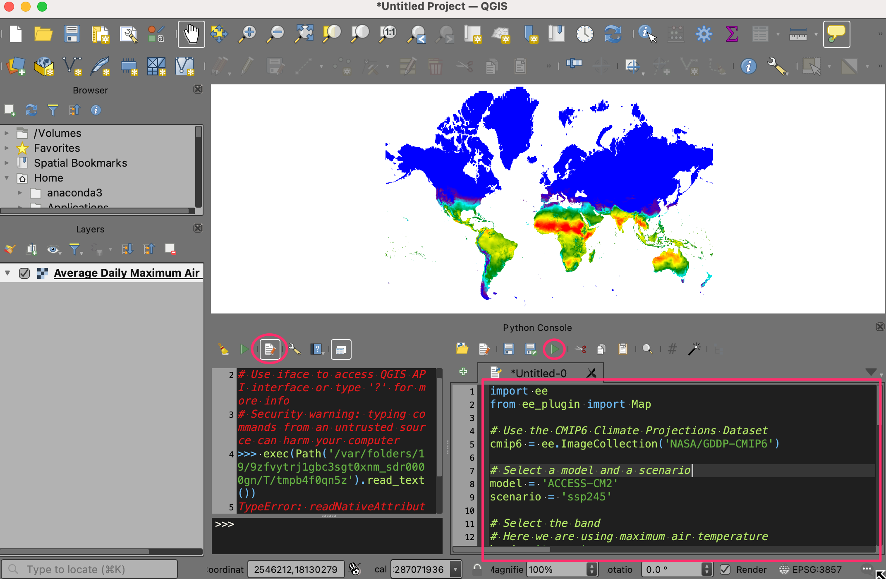
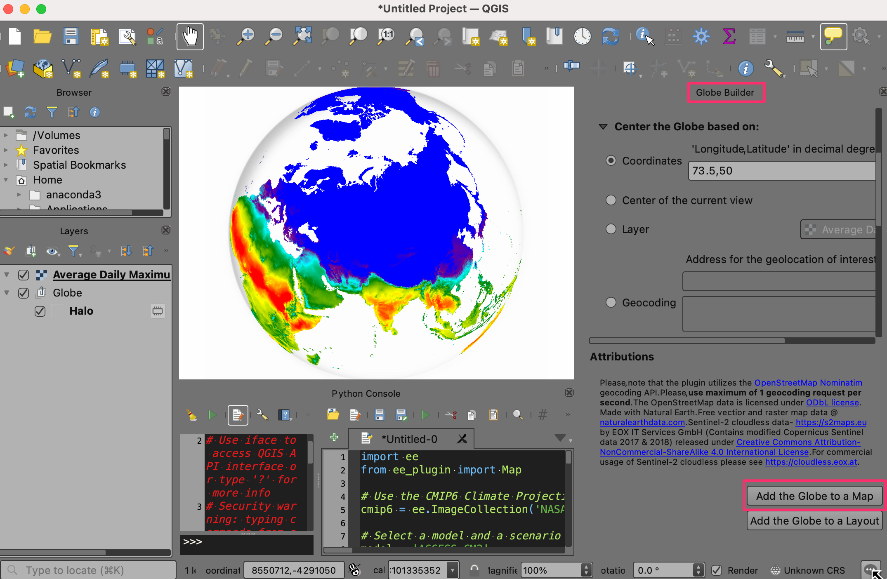

End-to-End Google Earth Engine (Full Course)
A hands-on introduction to applied remote sensing using Google Earth Engine.
Ujaval Gandhi
- Introduction
- Sign-up for Google Earth Engine
- Complete the Class Pre-Work
- Get the Course Videos
- Get the Course Materials
- Module 1: Earth Engine Basics
- Module 2: Earth Engine Intermediate
- Module 3: Supervised Classification
- Module 4: Change Detection
- Module 5: Earth Engine Apps
- Module 6: Google Earth Engine Python API
- Supplement
- Guided Projects
- Learning Resources
- Useful Public Repositories
- Debugging Errors and Scaling Your Analysis
- Data Credits
- References
- License
- Citing and Referencing

Introduction
Google Earth Engine is a cloud-based platform that enables large-scale processing of satellite imagery to detect changes, map trends, and quantify differences on the Earth’s surface. This course covers the full range of topics in Earth Engine to give the participants practical skills to master the platform and implement their remote sensing projects.

Sign-up for Google Earth Engine
If you already have a Google Earth Engine account, you can skip this step.
Visit our GEE Sign-Up Guide for step-by-step instructions.
Complete the Class Pre-Work
This class needs about 2-hours of pre-work. Please watch the following videos to get a good understanding of remote sensing and how Earth Engine works.
- Introduction to Remote Sensing: This video introduces the remote sensing concepts, terminology and techniques.
- Introduction to Google Earth Engine: This video gives a broad overview of Google Earth Engine with selected case studies and application. The video also covers the Earth Engine architecture and how it is different than traditional remote sensing software.
Get the Course Videos
The course is accompanied by a set of videos covering the all the modules. These videos are recorded from our live instructor-led classes and are edited to make them easier to consume for self-study. We have 2 versions of the videos:
YouTube
We have created a YouTube Playlist with separate videos for each module to enable effective online-learning. Access the YouTube Playlist ↗
Vimeo
We are also making the module videos available on Vimeo. These videos can be downloaded for offline learning. Access the Vimeo Playlist ↗
Get the Course Materials
The course material and exercises are in the form of Earth Engine scripts shared via a code repository.
- Click this link to open Google Earth Engine code editor and add the repository to your account.
- If successful, you will have a new repository named
users/ujavalgandhi/End-to-End-GEEin the Scripts tab in the Reader section. - Verify that your code editor looks like below

Code Editor After Adding the Class Repository
If you do not see the repository in the Reader section, click Refresh repository cache button in your Scripts tab and it will show up.

Refresh repository cache
There are several slide decks containing useful information and references. You can access all the presentations used in the course from the links below.
- Introduction and course overview [Presentation ↗]
- Map/Reduce Programming Concepts [Presentation ↗]
- Introduction to Machine Learning & Supervised Classification [Presentation ↗]
- Introduction to Change Detection [Presentation ↗]
- Introduction to Earth Engine Apps [Presentation ↗]
- Introduction to Google Earth Engine Python API [Presentation ↗]
Module 1: Earth Engine Basics
Module 1 is designed to give you basic skills to be able to find datasets you need for your project, filter them to your region of interest, apply basic processing and export the results. Mastering this will allow you to start using Earth Engine for your project quickly and save a lot of time pre-processing the data.

01. Hello World
This script introduces the basic Javascript syntax and the video covers the programming concepts you need to learn when using Earth Engine. To learn more, visit Introduction to JavaScript for Earth Engine section of the Earth Engine User Guide.
The Code Editor is an Integrated Development Environment (IDE) for Earth Engine Javascript API.. It offers an easy way to type, debug, run and manage code. Type the code below and click Run to execute it and see the output in the Console tab.
Tip: You can use the keyboard shortcut Ctrl+Enter to run the code in the Code Editor

Hello World
print('Hello World');
// Variables
var city = 'Bengaluru';
var country = 'India';
print(city, country);
var population = 8400000;
print(population);
// List
var majorCities = ['Mumbai', 'Delhi', 'Chennai', 'Kolkata'];
print(majorCities);
// Dictionary
var cityData = {
'city': city,
'population': 8400000,
'elevation': 930
};
print(cityData);
// Function
var greet = function(name) {
return 'Hello ' + name;
};
print(greet('World'));
// This is a commentExercise
Saving Your Work
When you modify any script for the course repository, you may want to save a copy for yourself. If you try to click the Save button, you will get an error message like below

This is because the shared class repository is a Read-only repository. You can click Yes to save a copy in your repository. If this is the first time you are using Earth Engine, you will be prompted to choose a Earth Engine username. Choose the name carefully, as it cannot be changed once created.

After entering your username, your home folder will be created. After that, you will be prompted to enter a new repository. A repository can help you organize and share code. Your account can have multiple repositories and each repository can have multiple scripts inside it. To get started, you can create a repository named default. Finally, you will be able to save the script.
02. Working with Image Collections
Most datasets in Earth Engine come as a ImageCollection.
An ImageCollection is a dataset that consists of images takes at
different time and locations - usually from the same satellite or data
provider. You can load a collection by searching the Earth Engine
Data Catalog for the ImageCollection ID. Search for the
Sentinel-2 Level 1C dataset and you will find its id
COPERNICUS/S2_SR. Visit the Sentinel-2,
Level 1C page and see Explore in Earth Engine section to
find the code snippet to load and visualize the collection. This snippet
is a great starting point for your work with this dataset. Click the
Copy Code Sample button and paste the code into the
code editor. Click Run and you will see the image tiles load in
the map.

In the code snippet, You will see a function
Map.setCenter() which sets the viewport to a specific
location and zoom level. The function takes the X coordinate
(longitude), Y coordinate (latitude) and Zoom Level parameters. Replace
the X and Y coordinates with the coordinates of your city and click
Run to see the images of your city.

Exercise
03. Filtering Image Collections
The collection contains all imagery ever collected by the sensor. The
entire collections are not very useful. Most applications require a
subset of the images. We use filters to select the
appropriate images. There are many types of filter functions, look at
ee.Filter... module to see all available filters. Select a
filter and then run the filter() function with the filter
parameters.
We will learn about 3 main types of filtering techniques
- Filter by metadata: You can apply a filter on the
image metadata using filters such as
ee.Filter.eq(),ee.Filter.lt()etc. You can filter by PATH/ROW values, Orbit number, Cloud cover etc. - Filter by date: You can select images in a
particular date range using filters such as
ee.Filter.date(). - Filter by location: You can select the subset of
images with a bounding box, location or geometry using the
ee.Filter.bounds(). You can also use the drawing tools to draw a geometry for filtering.
After applying the filters, you can use the size()
function to check how many images match the filters.

var geometry = ee.Geometry.Point([77.60412933051538, 12.952912912328241])
Map.centerObject(geometry, 10)
var s2 = ee.ImageCollection('COPERNICUS/S2_HARMONIZED');
// Filter by metadata
var filtered = s2.filter(ee.Filter.lt('CLOUDY_PIXEL_PERCENTAGE', 30));
// Filter by date
var filtered = s2.filter(ee.Filter.date('2019-01-01', '2020-01-01'));
// Filter by location
var filtered = s2.filter(ee.Filter.bounds(geometry));
// Let's apply all the 3 filters together on the collection
// First apply metadata fileter
var filtered1 = s2.filter(ee.Filter.lt('CLOUDY_PIXEL_PERCENTAGE', 30));
// Apply date filter on the results
var filtered2 = filtered1.filter(
ee.Filter.date('2019-01-01', '2020-01-01'));
// Lastly apply the location filter
var filtered3 = filtered2.filter(ee.Filter.bounds(geometry));
// Instead of applying filters one after the other, we can 'chain' them
// Use the . notation to apply all the filters together
var filtered = s2.filter(ee.Filter.lt('CLOUDY_PIXEL_PERCENTAGE', 30))
.filter(ee.Filter.date('2019-01-01', '2020-01-01'))
.filter(ee.Filter.bounds(geometry));
print(filtered.size());Exercise
var geometry = ee.Geometry.Point([77.60412933051538, 12.952912912328241]);
var s2 = ee.ImageCollection('COPERNICUS/S2_HARMONIZED');
var filtered = s2
.filter(ee.Filter.lt('CLOUDY_PIXEL_PERCENTAGE', 30))
.filter(ee.Filter.date('2019-01-01', '2020-01-01'))
.filter(ee.Filter.bounds(geometry));
print(filtered.size());
// Exercise
// Delete the 'geometry' variable
// Add a point at your chosen location
// Change the filter to find images from January 2023
// Note: If you are in a very cloudy region,
// make sure to adjust the CLOUDY_PIXEL_PERCENTAGE04. Creating Mosaics and Composites from ImageCollections
The default order of the collection is by date. So when you display
the collection, it implicitly creates a mosaic with the latest pixels on
top. You can call .mosaic() on a ImageCollection to create
a mosaic image from the pixels at the top.
We can also create a composite image by applying selection criteria
to each pixel from all pixels in the stack. Here we use the
median() function to create a composite where each pixel
value is the median of all pixels from the stack.
Tip: If you need to create a mosaic where the images are in a specific order, you can use the
.sort()function to sort your collection by a property first.

Mosaic vs. Composite
var geometry = ee.Geometry.Point([77.60412933051538, 12.952912912328241]);
var s2 = ee.ImageCollection('COPERNICUS/S2_HARMONIZED');
var filtered = s2.filter(ee.Filter.lt('CLOUDY_PIXEL_PERCENTAGE', 30))
.filter(ee.Filter.date('2019-01-01', '2020-01-01'))
.filter(ee.Filter.bounds(geometry));
var mosaic = filtered.mosaic();
var medianComposite = filtered.median();
Map.centerObject(geometry, 10);
var rgbVis = {
min: 0.0,
max: 3000,
bands: ['B4', 'B3', 'B2'],
};
Map.addLayer(filtered, rgbVis, 'Filtered Collection');
Map.addLayer(mosaic, rgbVis, 'Mosaic');
Map.addLayer(medianComposite, rgbVis, 'Median Composite');Exercise
05. Working with Feature Collections
Feature Collections are similar to Image Collections - but they contain Features, not images. They are equivalent to Vector Layers in a GIS. We can load, filter and display Feature Collections using similar techniques that we have learned so far.
Search for GAUL Second Level Administrative Boundaries and
load the collection. This is a global collection that contains all
Admin2 boundaries. We can apply a filter using the
ADM1_NAME property to get all Admin2 boundaries
(i.e. Districts) from a state.

// Use the GAUL 2015 dataset from the GEE Data Catalog
var admin2 = ee.FeatureCollection('FAO/GAUL_SIMPLIFIED_500m/2015/level2');
var filtered = admin2.filter(ee.Filter.eq('ADM1_NAME', 'Karnataka'));
// Alternatively, use the newer GAUL 2024 dataset from the community catalog
// https://gee-community-catalog.org/projects/gaul/
var admin2 = ee.FeatureCollection("projects/sat-io/open-datasets/FAO/GAUL/GAUL_2024_L2");
var filtered = admin2.filter(ee.Filter.eq('gaul1_name', 'Karnataka'));
var visParams = {'color': 'red'};
Map.addLayer(filtered, visParams, 'Selected Districts');Exercise
var admin2 = ee.FeatureCollection('FAO/GAUL_SIMPLIFIED_500m/2015/level2');
Map.addLayer(admin2, {color: 'grey'}, 'All Admin2 Polygons');
// Exercise
// Apply filters to select your chosen Admin2 region
// Display the results in 'red' color
// Hint1: Switch to the 'Inspector' tab and click on any
// polygon to know its properties and their values
// Hint2: Many countries do not have unique names for
// Admin2 regions. Make sure to apply a filter to select
// the Admin1 region that contains your chosen Admin2 region06. Importing Data
You can import vector or raster data into Earth Engine. We will now
import a shapefile of Urban
Centres from JRC’s GHS Urban Centre Database (GHS-UCDB). Unzip the
ghs_urban_centers.zip into a folder on your computer. In
the Code Editor, go to Assets → New → Table Upload → Shape
Files. Select the .shp, .shx,
.dbf and .prj files. Enter
ghs_urban_centers as the Asset Name and click
Upload. Once the upload and ingest finishes, you will have a
new asset in the Assets tab. The shapefile is imported as a
Feature Collection in Earth Engine. Select the
ghs_urban_centers asset and click Import. You can
then visualize the imported data.

Importing a Shapefile
// Let's import some data to Earth Engine
// Upload the 'GHS Urban Centers' database from JRC
// https://ghsl.jrc.ec.europa.eu/ghs_stat_ucdb2015mt_r2019a.php
// Download the shapefile from https://bit.ly/ghs-ucdb-shapefile
// Unzip and upload
// Import the collection
var urban = ee.FeatureCollection('users/ujavalgandhi/e2e/ghs_urban_centers');
// Visualize the collection
Map.addLayer(urban, {color: 'blue'}, 'Urban Areas');Exercise
var urban = ee.FeatureCollection('users/ujavalgandhi/e2e/ghs_urban_centers');
print(urban.first());
// Exercise
// Apply a filter to select only large urban centers
// in your country and display it on the map.
// Select all urban centers in your country with
// a population greater than 1000000
// Hint1: Use the property 'CTR_MN_NM' containing country names
// Hint2: Use the property 'P15' containing 2015 Population07. Clipping Images
It is often desirable to clip the images to your area of interest.
You can use the clip() function to mask out an image using
a geometry.
While in a Desktop software, clipping is desirable to remove unnecessary portion of a large image and save computation time, in Earth Engine clipping can actually increase the computation time. As described in the Earth Engine Coding Best Practices guide, avoid clipping the images or do it at the end of your script.

Original vs. Clipped Image
var s2 = ee.ImageCollection('COPERNICUS/S2_HARMONIZED');
var urban = ee.FeatureCollection('users/ujavalgandhi/e2e/ghs_urban_centers');
// Find the name of the urban centre
// by adding the layer to the map and using Inspector.
var filtered = urban
.filter(ee.Filter.eq('UC_NM_MN', 'Bengaluru'))
.filter(ee.Filter.eq('CTR_MN_NM', 'India'));
var geometry = filtered.geometry();
var rgbVis = {
min: 0.0,
max: 3000,
bands: ['B4', 'B3', 'B2'],
};
var filtered = s2.filter(ee.Filter.lt('CLOUDY_PIXEL_PERCENTAGE', 30))
.filter(ee.Filter.date('2019-01-01', '2020-01-01'))
.filter(ee.Filter.bounds(geometry));
var image = filtered.median();
var clipped = image.clip(geometry);
Map.centerObject(geometry);
Map.addLayer(clipped, rgbVis, 'Clipped');Exercise
08. Exporting Data
Earth Engine allows for exporting both vector and raster data to be
used in an external program. Vector data can be exported as a
CSV or a Shapefile, while Rasters can be
exported as GeoTIFF files. We will now export the
Sentinel-2 Composite as a GeoTIFF file.
Tip: Code Editor supports autocompletion of API functions using the combination Ctrl+Space. Type a few characters of a function and press Ctrl+Space to see autocomplete suggestions. You can also use the same key combination to fill all parameters of the function automatically.
Once you run this script, the Tasks tab will be highlighted. Switch to the tab and you will see the tasks waiting. Click Run next to each task to start the process.

On clicking the Run button, you will be prompted for a confirmation dialog. Verify the settings and click Run to start the export.

Once the Export finishes, a GeoTiff file for each export task will be added to your Google Drive in the specified folder. You can download them and use it in a GIS software.

Visualized vs. Raw Composite
var s2 = ee.ImageCollection('COPERNICUS/S2_HARMONIZED');
var urban = ee.FeatureCollection('users/ujavalgandhi/e2e/ghs_urban_centers');
var filtered = urban
.filter(ee.Filter.eq('UC_NM_MN', 'Bengaluru'))
.filter(ee.Filter.eq('CTR_MN_NM', 'India'));
var geometry = filtered.geometry();
var rgbVis = {
min: 0.0,
max: 3000,
bands: ['B4', 'B3', 'B2'],
};
var filtered = s2.filter(ee.Filter.lt('CLOUDY_PIXEL_PERCENTAGE', 30))
.filter(ee.Filter.date('2019-01-01', '2020-01-01'))
.filter(ee.Filter.bounds(geometry));
var image = filtered.median();
var clipped = image.clip(geometry);
Map.centerObject(geometry);
Map.addLayer(clipped, rgbVis, 'Clipped');
var exportImage = clipped.select('B.*');
// Export raw image with original pixel values
Export.image.toDrive({
image: exportImage,
description: 'Bangalore_Composite_Raw',
folder: 'earthengine',
fileNamePrefix: 'bangalore_composite_raw',
region: geometry,
scale: 10,
maxPixels: 1e9
});
// Export visualized image as colorized RGB image
// Rather than exporting raw bands, we can apply a rendered image
// visualize() function allows you to apply the same parameters
// that are used in earth engine which exports a 3-band RGB image
// Note: Visualized images are not suitable for analysis
var visualized = clipped.visualize(rgbVis);
Export.image.toDrive({
image: visualized,
description: 'Bangalore_Composite_Visualized',
folder: 'earthengine',
fileNamePrefix: 'bangalore_composite_visualized',
region: geometry,
scale: 10,
maxPixels: 1e9
});Exercise
Assignment 1
Load the Night Lights Data for May 2015 and May 2020. Compare the imagery for your region and find the changes in the city due to COVID-19 effect.

Assignment1 Expected Output
// Assignment
// Export the Night Lights images for May,2015 and May,2020
// Workflow:
// Load the VIIRS Nighttime Day/Night Band Composites collection
// Filter the collection to the date range
// Extract the 'avg_rad' band which represents the nighttime lights
// Clip the image to the geometry of your city
// Export the resulting image as a GeoTIFF file.
// Hint1:
// There are 2 VIIRS Nighttime Day/Night collections
// Use the one that corrects for stray light
// Hint2:
// The collection contains 1 global image per month
// After filtering for the month, there will be only 1 image in the collection
// You can use the following technique to extract that image
// var image = ee.Image(filtered.first())Module 2: Earth Engine Intermediate
Module 2 builds on the basic Earth Engine skills you have gained. This model introduces the parallel programming concepts using Map/Reduce - which is key in effectively using Earth Engine for analyzing large volumes of data. You will learn how to use the Earth Engine API for calculating various spectral indices, do cloud masking and then use map/reduce to do apply these computations to collections of imagery. You will also learn how to take long time-series of data and create charts.

01. Earth Engine Objects
This script introduces the basics of the Earth Engine API. When programming in Earth Engine, you must use the Earth Engine API so that your computations can use the Google Earth Engine servers. To learn more, visit Earth Engine Objects and Methods section of the Earth Engine User Guide.
// Let's see how to take a list of numbers and add 1 to each element
var myList = ee.List.sequence(1, 10);
// Define a function that takes a number and adds 1 to it
var myFunction = function(number) {
return number + 1;
};
print(myFunction(1));
//Re-Define a function using Earth Engine API
var myFunction = function(number) {
return ee.Number(number).add(1);
};
// Map the function of the list
var newList = myList.map(myFunction);
print(newList);
// Extracting value from a list
var value = newList.get(0);
print(value);
// Casting
// Let's try to do some computation on the extracted value
//var newValue = value.add(1)
//print(newValue)
// You get an error because Earth Engine doesn't know what is the type of 'value'
// We need to cast it to appropriate type first
var value = ee.Number(value);
var newValue = value.add(1);
print(newValue);
// Dictionary
// Convert javascript objects to EE Objects
var data = {'city': 'Bengaluru', 'population': 8400000, 'elevation': 930};
var eeData = ee.Dictionary(data);
// Once converted, you can use the methods from the
// ee.Dictionary module
print(eeData.get('city'));
// Dates
// For any date computation, you should use ee.Date module
var date = ee.Date('2019-01-01');
var futureDate = date.advance(1, 'year');
print(futureDate);As a general rule, you should always use Earth Engine API methods in your code, there is one exception where you will need to use client-side Javascript method. If you want to get the current time, the server doesn’t know your time. You need to use javascript method and cast it to an Earth Engine object.
var now = Date.now() print(now) var now = ee.Date(now) print(now)
Exercise
var s2 = ee.ImageCollection('COPERNICUS/S2_HARMONIZED');
var geometry = ee.Geometry.Point([77.60412933051538, 12.952912912328241]);
var now = Date.now();
var now = ee.Date(now);
// Exercise
// Apply another filter to the collection below to filter images
// collected in the last 1-month
// Do not hard-code the dates, it should always show images
// from the past 1-month whenever you run the script
// Hint: Use ee.Date.advance() function
// to compute the date 1 month before now
var filtered = s2
.filter(ee.Filter.bounds(geometry))02. Calculating Indices
Spectral Indices are central to many aspects of remote sensing.
Whether you are studying vegetation or tracking fires - you will need to
compute a pixel-wise ratio of 2 or more bands. The most commonly used
formula for calculating an index is the Normalized Difference
between 2 bands. Earth Engine provides a helper function
normalizedDifference() to help calculate normalized
indices, such as Normalized Difference Vegetation Index (NDVI). For more
complex formulae, you can also use the expression()
function to describe the calculation.

MNDWI, SAVI and NDVI images
var s2 = ee.ImageCollection('COPERNICUS/S2_HARMONIZED');
var admin2 = ee.FeatureCollection('FAO/GAUL_SIMPLIFIED_500m/2015/level2');
var filteredAdmin2 = admin2
.filter(ee.Filter.eq('ADM2_NAME', 'Bangalore Urban'))
.filter(ee.Filter.eq('ADM1_NAME', 'Karnataka'));
var geometry = filteredAdmin2.geometry();
Map.centerObject(geometry);
var filteredS2 = s2.filter(ee.Filter.lt('CLOUDY_PIXEL_PERCENTAGE', 30))
.filter(ee.Filter.date('2019-01-01', '2020-01-01'))
.filter(ee.Filter.bounds(geometry));
var image = filteredS2.median();
// Calculate Normalized Difference Vegetation Index (NDVI)
// 'NIR' (B8) and 'RED' (B4)
var ndvi = image.normalizedDifference(['B8', 'B4']).rename(['ndvi']);
// Calculate Modified Normalized Difference Water Index (MNDWI)
// 'GREEN' (B3) and 'SWIR1' (B11)
var mndwi = image.normalizedDifference(['B3', 'B11']).rename(['mndwi']);
// Calculate Soil-adjusted Vegetation Index (SAVI)
// 1.5 * ((NIR - RED) / (NIR + RED + 0.5))
// For more complex indices, you can use the expression() function
// Note:
// For the SAVI formula, the pixel values need to converted to reflectances
// Multiplyng the pixel values by 'scale' gives us the reflectance value
// The scale value is 0.0001 for Sentinel-2 dataset
var savi = image.expression(
'1.5 * ((NIR - RED) / (NIR + RED + 0.5))', {
'NIR': image.select('B8').multiply(0.0001),
'RED': image.select('B4').multiply(0.0001),
}).rename('savi');
var rgbVis = {min: 0.0, max: 3000, bands: ['B4', 'B3', 'B2']};
var ndviVis = {min:0, max:1, palette: ['white', 'green']};
var ndwiVis = {min:0, max:0.5, palette: ['white', 'blue']};
Map.addLayer(image.clip(geometry), rgbVis, 'Image');
Map.addLayer(mndwi.clip(geometry), ndwiVis, 'mndwi');
Map.addLayer(savi.clip(geometry), ndviVis, 'savi');
Map.addLayer(ndvi.clip(geometry), ndviVis, 'ndvi');Exercise
var s2 = ee.ImageCollection('COPERNICUS/S2_HARMONIZED');
var admin2 = ee.FeatureCollection('FAO/GAUL_SIMPLIFIED_500m/2015/level2');
var filteredAdmin2 = admin2
.filter(ee.Filter.eq('ADM2_NAME', 'Bangalore Urban'))
.filter(ee.Filter.eq('ADM1_NAME', 'Karnataka'));
var geometry = filteredAdmin2.geometry();
Map.centerObject(geometry);
var filteredS2 = s2.filter(ee.Filter.lt('CLOUDY_PIXEL_PERCENTAGE', 30))
.filter(ee.Filter.date('2019-01-01', '2020-01-01'))
.filter(ee.Filter.bounds(geometry));
var image = filteredS2.median();
var rgbVis = {min: 0.0, max: 3000, bands: ['B4', 'B3', 'B2']};
Map.addLayer(image.clip(geometry), rgbVis, 'Image');
// Exercise
// Change the filter to select your chosen Admin2 region
// Calculate the Normalized Difference Built-Up Index (NDBI) for the image
// Hint: NDBI = (SWIR1 – NIR) / (SWIR1 + NIR)
// Visualize the built-up area using a 'red' palette03. Computation on ImageCollections
So far we have learnt how to run computation on single images. If you
want to apply some computation - such as calculating an index - to many
images, you need to use map(). You first define a function
that takes 1 image and returns the result of the computation on that
image. Then you can map() that function over the
ImageCollection which results in a new ImageCollection with the results
of the computation. This is similar to a for-loop that you
maybe familiar with - but using map() allows the
computation to run in parallel. Learn more at Mapping
over an ImageCollection

NDVI computation on an ImageCollection
var s2 = ee.ImageCollection('COPERNICUS/S2_HARMONIZED');
var admin1 = ee.FeatureCollection('FAO/GAUL_SIMPLIFIED_500m/2015/level1');
// Select an Admin1 region
var filteredAdmin1 = admin1.filter(ee.Filter.eq('ADM1_NAME', 'Karnataka'));
var geometry = filteredAdmin1.geometry();
Map.centerObject(geometry);
var rgbVis = {min: 0.0, max: 3000, bands: ['B4', 'B3', 'B2']};
var filteredS2 = s2.filter(ee.Filter.lt('CLOUDY_PIXEL_PERCENTAGE', 30))
.filter(ee.Filter.date('2019-01-01', '2020-01-01'))
.filter(ee.Filter.bounds(geometry));
var composite = filteredS2.median().clip(geometry);
Map.addLayer(composite, rgbVis, 'Admin1 Composite');
// Write a function that computes NDVI for an image and adds it as a band
function addNDVI(image) {
var ndvi = image.normalizedDifference(['B8', 'B4']).rename('ndvi');
return image.addBands(ndvi);
}
// Map the function over the collection
var withNdvi = filteredS2.map(addNDVI);
var composite = withNdvi.median();
var ndviComposite = composite.select('ndvi');
var palette = [
'FFFFFF', 'CE7E45', 'DF923D', 'F1B555', 'FCD163', '99B718',
'74A901', '66A000', '529400', '3E8601', '207401', '056201',
'004C00', '023B01', '012E01', '011D01', '011301'];
var ndviVis = {min:0, max:0.5, palette: palette };
Map.addLayer(ndviComposite.clip(geometry), ndviVis, 'ndvi');Exercise
var s2 = ee.ImageCollection('COPERNICUS/S2_HARMONIZED');
var admin1 = ee.FeatureCollection('FAO/GAUL_SIMPLIFIED_500m/2015/level1');
// Select an Admin1 region
var filteredAdmin1 = admin1.filter(ee.Filter.eq('ADM1_NAME', 'Karnataka'));
var geometry = filteredAdmin1.geometry();
Map.centerObject(geometry);
var rgbVis = {min: 0.0, max: 3000, bands: ['B4', 'B3', 'B2']};
var filteredS2 = s2.filter(ee.Filter.lt('CLOUDY_PIXEL_PERCENTAGE', 30))
.filter(ee.Filter.date('2019-01-01', '2020-01-01'))
.filter(ee.Filter.bounds(geometry));
var composite = filteredS2.median();
Map.addLayer(composite.clip(geometry), rgbVis, 'Admin1 Composite');
// This function calculates both NDVI and NDWI indices
// and returns an image with 2 new bands added to the original image.
function addIndices(image) {
var ndvi = image.normalizedDifference(['B8', 'B4']).rename('ndvi');
var ndwi = image.normalizedDifference(['B3', 'B8']).rename('ndwi');
return image.addBands(ndvi).addBands(ndwi);
}
// Map the function over the collection
var withIndices = filteredS2.map(addIndices);
// Composite
var composite = withIndices.median();
print(composite);
// Exercise
// Display a map of NDWI for the region
// Select the 'ndwi' band and clip it before displaying
// Use a color palette from https://colorbrewer2.org/
// Hint: Use .select() function to select a band04. Cloud Masking
Masking pixels in an image makes those pixels transparent and
excludes them from analysis and visualization. To mask an image, we can
use the updateMask() function and pass it an image with 0
and 1 values. All pixels where the mask image is 0 will be masked.
Most remote sensing datasets come with a QA or Cloud Mask band that contains the information on whether pixels is cloudy or not. Your Code Editor contains pre-defined functions for masking clouds for popular datasets under Scripts Tab → Examples → Cloud Masking. To understand how cloud-masking functions work and learn advanced techniques for bitmasking, please refer to our article on Working with QA Bands and Bitmasks in Google Earth Engine.
The script below takes the Sentinel-2 masking function and shows how to apply it on an image.

Applying pixel-wise QA bitmask
var s2 = ee.ImageCollection('COPERNICUS/S2_HARMONIZED');
var geometry = ee.Geometry.Point([77.60412933051538, 12.952912912328241]);
var filteredS2 = s2
.filter(ee.Filter.lt('CLOUDY_PIXEL_PERCENTAGE', 35))
.filter(ee.Filter.date('2019-01-01', '2020-01-01'))
.filter(ee.Filter.bounds(geometry));
// Sort the collection and pick the most cloudy image
var filteredS2Sorted = filteredS2.sort({
property: 'CLOUDY_PIXEL_PERCENTAGE',
ascending: false
});
var image = filteredS2Sorted.first();
var rgbVis = {
min: 0.0,
max: 3000,
bands: ['B4', 'B3', 'B2'],
};
Map.centerObject(image);
Map.addLayer(image, rgbVis, 'Full Image', false);
// Write a function for Cloud masking
function maskS2clouds(image) {
var qa = image.select('QA60');
var cloudBitMask = 1 << 10;
var cirrusBitMask = 1 << 11;
var mask = qa.bitwiseAnd(cloudBitMask).eq(0).and(
qa.bitwiseAnd(cirrusBitMask).eq(0));
return image.updateMask(mask)
.select('B.*')
.copyProperties(image, ['system:time_start']);
}
var imageMasked = ee.Image(maskS2clouds(image));
Map.addLayer(imageMasked, rgbVis, 'Masked Image');Exercise
var s2 = ee.ImageCollection('COPERNICUS/S2_HARMONIZED');
var geometry = ee.Geometry.Point([77.60412933051538, 12.952912912328241]);
var filteredS2 = s2
.filter(ee.Filter.lt('CLOUDY_PIXEL_PERCENTAGE', 35))
.filter(ee.Filter.date('2019-01-01', '2020-01-01'))
.filter(ee.Filter.bounds(geometry));
// Sort the collection and pick the most cloudy image
var filteredS2Sorted = filteredS2.sort({
property: 'CLOUDY_PIXEL_PERCENTAGE',
ascending: false
});
var image = filteredS2Sorted.first();
var rgbVis = {
min: 0.0,
max: 3000,
bands: ['B4', 'B3', 'B2'],
};
Map.centerObject(image);
Map.addLayer(image, rgbVis, 'Full Image', false);
// Write a function for Cloud masking
function maskS2clouds(image) {
var qa = image.select('QA60');
var cloudBitMask = 1 << 10;
var cirrusBitMask = 1 << 11;
var mask = qa.bitwiseAnd(cloudBitMask).eq(0).and(
qa.bitwiseAnd(cirrusBitMask).eq(0));
return image.updateMask(mask)
.select('B.*')
.copyProperties(image, ['system:time_start']);
}
var imageMasked = ee.Image(maskS2clouds(image));
Map.addLayer(imageMasked, rgbVis, 'Masked Image (QA60 Band)', false);
// Use Google's Cloud Score+ Mask
var csPlus = ee.ImageCollection('GOOGLE/CLOUD_SCORE_PLUS/V1/S2_HARMONIZED');
var csPlusBands = csPlus.first().bandNames();
// Link S2 and CS+ results.
var imageWithCs = image.linkCollection(csPlus, csPlusBands);
// Function to mask pixels with low CS+ QA scores.
function maskLowQA(image) {
var qaBand = 'cs';
var clearThreshold = 0.6;
var mask = image.select(qaBand).gte(clearThreshold);
return image.updateMask(mask);
}
var imageMaskedCs = ee.Image(maskLowQA(imageWithCs));
Map.addLayer(imageMaskedCs, rgbVis, 'Masked Image (Cloud Score+)');
// Google CloudScore+ dataset provides state-of-the-art
// cloud masks for Sentinel-2 images.
// It grades each image pixel on continuous scale between 0 and 1,
// 0 = 'not clear' (occluded),
// 1 = 'clear' (unoccluded)
// Exercise
// Delete the 'geometry' variable and add a point at your chosen location
// Run the script and compare the results of the CloudScore+ mask with
// the QA60 mask
// Adjust the 'clearThreshold' value to suit your scene
// Hint:
// clearThreshold values between 0.50 and 0.65 generally work well
// Higher values will remove thin clouds, haze & cirrus shadows.Learn more about the Cloud Score+ project.
05. Reducers
When writing parallel computing code, a Reduce operation
allows you to compute statistics on a large amount of inputs. In Earth
Engine, you need to run reduction operation when creating composites,
calculating statistics, doing regression analysis etc. The Earth Engine
API comes with a large number of built-in reducer functions (such as
ee.Reducer.sum(), ee.Reducer.histogram(),
ee.Reducer.linearFit() etc.) that can perform a variety of
statistical operations on input data. You can run reducers using the
reduce() function. Earth Engine supports running reducers
on all data structures that can hold multiple values, such as Images
(reducers run on different bands), ImageCollection, FeatureCollection,
List, Dictionary etc. The script below introduces basic concepts related
to reducers.
// Computing stats on a list
var myList = ee.List.sequence(1, 10);
print(myList)
// Use a reducer to compute average value
var mean = myList.reduce(ee.Reducer.mean());
print(mean);
var geometry = ee.Geometry.Polygon([[
[82.60642647743225, 27.16350437805251],
[82.60984897613525, 27.1618529901377],
[82.61088967323303, 27.163695288375266],
[82.60757446289062, 27.16517483230927]
]]);
var s2 = ee.ImageCollection('COPERNICUS/S2_HARMONIZED');
Map.centerObject(geometry);
// Apply a reducer on a image collection
var filtered = s2.filter(ee.Filter.lt('CLOUDY_PIXEL_PERCENTAGE', 30))
.filter(ee.Filter.date('2019-01-01', '2020-01-01'))
.filter(ee.Filter.bounds(geometry))
.select('B.*');
print(filtered.size());
var collMean = filtered.reduce(ee.Reducer.mean());
print('Reducer on Collection', collMean);
var image = ee.Image('COPERNICUS/S2/20190223T050811_20190223T051829_T44RPR');
var rgbVis = {min: 0.0, max: 3000, bands: ['B4', 'B3', 'B2']};
Map.addLayer(image, rgbVis, 'Image');
Map.addLayer(geometry, {color: 'red'}, 'Farm');
// If we want to compute the average value in each band,
// we can use reduceRegion instead
var stats = image.reduceRegion({
reducer: ee.Reducer.mean(),
geometry: geometry,
scale: 10,
maxPixels: 1e10
});
print(stats);
// Result of reduceRegion is a dictionary.
// We can extract the values using .get() function
print('Average value in B4', stats.get('B4'));Exercise
var geometry = ee.Geometry.Polygon([[
[82.60642647743225, 27.16350437805251],
[82.60984897613525, 27.1618529901377],
[82.61088967323303, 27.163695288375266],
[82.60757446289062, 27.16517483230927]
]]);
var rgbVis = {min: 0.0, max: 3000, bands: ['B4', 'B3', 'B2']};
var image = ee.Image('COPERNICUS/S2_HARMONIZED/20190223T050811_20190223T051829_T44RPR');
Map.addLayer(image, rgbVis, 'Image');
Map.addLayer(geometry, {color: 'red'}, 'Farm');
Map.centerObject(geometry);
var ndvi = image.normalizedDifference(['B8', 'B4']).rename('ndvi');
// Exercise
// Compute the average NDVI for the farm from the given image
// Hint: Use the reduceRegion() function06. Time-Series Charts
Now we can put together all the skills we have learnt so far -
filter, map, reduce, and cloud-masking to create a chart of average NDVI
values for a given farm over 1 year. Earth Engine API comes with support
for charting functions based on the Google Chart API. Here we use the
ui.Chart.image.series() function to create a time-series
chart.

Computing NDVI Time-series for a Farm

NDVI Time-series showing Dual-Cropping Cycle
var s2 = ee.ImageCollection('COPERNICUS/S2_HARMONIZED');
var geometry = ee.Geometry.Polygon([[
[82.60642647743225, 27.16350437805251],
[82.60984897613525, 27.1618529901377],
[82.61088967323303, 27.163695288375266],
[82.60757446289062, 27.16517483230927]
]]);
Map.addLayer(geometry, {color: 'red'}, 'Farm');
Map.centerObject(geometry);
var filtered = s2
.filter(ee.Filter.date('2017-01-01', '2018-01-01'))
.filter(ee.Filter.bounds(geometry));
// Load the Cloud Score+ collection
var csPlus = ee.ImageCollection('GOOGLE/CLOUD_SCORE_PLUS/V1/S2_HARMONIZED');
var csPlusBands = csPlus.first().bandNames();
// We need to add Cloud Score + bands to each Sentinel-2
// image in the collection
// This is done using the linkCollection() function
var filteredS2WithCs = filtered.linkCollection(csPlus, csPlusBands);
// Function to mask pixels with low CS+ QA scores.
var maskLowQA = function(image) {
var qaBand = 'cs';
var clearThreshold = 0.5;
var mask = image.select(qaBand).gte(clearThreshold);
return image.updateMask(mask);
};
// map() the function to mask all images
var filteredMasked = filteredS2WithCs
.map(maskLowQA)
.select('B.*');
// Function to scale pixel values to reflectance
var scaleValues = function(image) {
var scaledImage = image.multiply(0.0001);
// This creates a new image and we lose the properties
// copy the system:time_start property
// from the originalimage
return scaledImage
.copyProperties(image, ['system:time_start']);
};
// Function that computes NDVI for an image and adds it as a band
var addNDVI = function(image) {
var ndvi = image.normalizedDifference(['B8', 'B4']).rename('ndvi');
return image.addBands(ndvi);
};
// Map the functions over the collection
var withNdvi = filteredMasked
.map(scaleValues)
.map(addNDVI);
// Display a time-series chart
var chart = ui.Chart.image.series({
imageCollection: withNdvi.select('ndvi'),
region: geometry,
reducer: ee.Reducer.mean(),
scale: 10
}).setOptions({
lineWidth: 1,
pointSize: 2,
title: 'NDVI Time Series',
interpolateNulls: true,
vAxis: {title: 'NDVI'},
hAxis: {title: '', format: 'YYYY-MMM'}
});
print(chart);Exercise
Assignment 2

Assignment2 Expected Output
var terraclimate = ee.ImageCollection("IDAHO_EPSCOR/TERRACLIMATE");
var geometry = ee.Geometry.Point([77.54849920033682, 12.91215102400037]);
// Assignment
// Use TerraClimate dataset to chart a 50 year time series
// of temparature at any location
// Workflow
// Load the TerraClimate collection
// Select the 'tmmx' band
// Scale the band values
// Filter the scaled collection to the desired date range
// Use ui.Chart.image.series() function to create the chart
// Hint1
// The 'tmnx' band has a scaling factor of 0.1 as per
// https://developers.google.com/earth-engine/datasets/catalog/IDAHO_EPSCOR_TERRACLIMATE#bands
// This means that we need to multiply each pixel value by 0.1
// to obtain the actual temparature value
// map() a function and multiply each image
var tmax = terraclimate.select('tmmx');
// Function that applies the scaling factor to the each image
// Multiplying creates a new image that doesn't have the same properties
// Use copyProperties() function to copy timestamp to new image
var scaleImage = function(image) {
return image.multiply(0.1)
.copyProperties(image,['system:time_start']);
};
var tmaxScaled = tmax.map(scaleImage);
// Hint2
// You will need to specify pixel resolution as the scale parameter
// in the charting function
// Use projection().nominalScale() to find the
// image resolution in meters
var image = ee.Image(terraclimate.first())
print(image.projection().nominalScale())Module 3: Supervised Classification
Introduction to Machine Learning and Supervised Classification
Supervised classification is arguably the most important classical machine learning techniques in remote sensing. Applications range from generating Land Use/Land Cover maps to change detection. Google Earth Engine is unique suited to do supervised classification at scale. The interactive nature of Earth Engine development allows for iterative development of supervised classification workflows by combining many different datasets into the model. This module covers basic supervised classification workflow, accuracy assessment, hyperparameter tuning and change detection.

01. Basic Supervised Classification
We will learn how to do a basic land cover classification using
training samples collected from the Code Editor using the High
Resolution basemap imagery provided by Google Maps. This method requires
no prior training data and is quite effective to generate high quality
classification samples anywhere in the world. The goal is to classify
each source pixel into one of the following classes - urban, bare, water
or vegetation. Using the drawing tools in the code editor, you create 4
new feature collection with points representing pixels of that class.
Each feature collection has a property called landcover
with values of 0, 1, 2 or 3 indicating whether the feature collection
represents urban, bare, water or vegetation respectively. We then train
a Random Forest classifier using these training set to build a
model and apply it to all the pixels of the image to create a 4 class
image.
Fun fact: The classifiers in Earth Engine API have names starting with smile - such as
ee.Classifier.smileRandomForest(). The smile part refers to the Statistical Machine Intelligence and Learning Engine (SMILE) JAVA library which is used by Google Earth Engine to implement these algorithms.

Supervised Classification Output
var bangalore = ee.FeatureCollection('users/ujavalgandhi/public/bangalore_boundary');
var geometry = bangalore.geometry();
var s2 = ee.ImageCollection('COPERNICUS/S2_SR_HARMONIZED');
// The following collections were created using the
// Drawing Tools in the code editor
var urban = ee.FeatureCollection('users/ujavalgandhi/e2e/urban_gcps');
var bare = ee.FeatureCollection('users/ujavalgandhi/e2e/bare_gcps');
var water = ee.FeatureCollection('users/ujavalgandhi/e2e/water_gcps');
var vegetation = ee.FeatureCollection('users/ujavalgandhi/e2e/vegetation_gcps');
var filtered = s2
.filter(ee.Filter.lt('CLOUDY_PIXEL_PERCENTAGE', 30))
.filter(ee.Filter.date('2019-01-01', '2020-01-01'))
.filter(ee.Filter.bounds(geometry))
.select('B.*');
var composite = filtered.median();
// Display the input composite.
var rgbVis = {
min: 0.0,
max: 3000,
bands: ['B4', 'B3', 'B2'],
};
Map.addLayer(composite.clip(geometry), rgbVis, 'image');
var gcps = urban.merge(bare).merge(water).merge(vegetation);
// Overlay the point on the image to get training data.
var training = composite.sampleRegions({
collection: gcps,
properties: ['landcover'],
scale: 10
});
// Train a classifier.
var classifier = ee.Classifier.smileRandomForest(50).train({
features: training,
classProperty: 'landcover',
inputProperties: composite.bandNames()
});
// // Classify the image.
var classified = composite.classify(classifier);
// Choose a 4-color palette
// Assign a color for each class in the following order
// Urban, Bare, Water, Vegetation
var palette = ['#cc6d8f', '#ffc107', '#1e88e5', '#004d40' ];
Map.addLayer(classified.clip(geometry), {min: 0, max: 3, palette: palette}, '2019');
// Display the GCPs
// We use the style() function to style the GCPs
var palette = ee.List(palette);
var landcover = ee.List([0, 1, 2, 3]);
var gcpsStyled = ee.FeatureCollection(
landcover.map(function(lc){
var color = palette.get(landcover.indexOf(lc));
var markerStyle = { color: 'white', pointShape: 'diamond',
pointSize: 4, width: 1, fillColor: color};
return gcps.filter(ee.Filter.eq('landcover', lc))
.map(function(point){
return point.set('style', markerStyle)
})
})).flatten();
Map.addLayer(gcpsStyled.style({styleProperty:"style"}), {}, 'GCPs')
Map.centerObject(gcpsStyled)Exercise
var s2 = ee.ImageCollection('COPERNICUS/S2_SR_HARMONIZED');
// Perform supervised classification for your city
// Delete the geometry below and draw a polygon
// over your chosen city
var geometry = ee.Geometry.Polygon([[
[77.4149, 13.1203],
[77.4149, 12.7308],
[77.8090, 12.7308],
[77.8090, 13.1203]
]]);
Map.centerObject(geometry);
var filtered = s2
.filter(ee.Filter.lt('CLOUDY_PIXEL_PERCENTAGE', 30))
.filter(ee.Filter.date('2019-01-01', '2020-01-01'))
.filter(ee.Filter.bounds(geometry))
.select('B.*');
var composite = filtered.median();
// Display the input composite.
var rgbVis = {min: 0.0, max: 3000, bands: ['B4', 'B3', 'B2']};
Map.addLayer(composite.clip(geometry), rgbVis, 'image');
// Exercise
// Add training points for 4 classes
// Assign the 'landcover' property as follows
// urban: 0
// bare: 1
// water: 2
// vegetation: 3
// After adding points, uncomments lines below
// var gcps = urban.merge(bare).merge(water).merge(vegetation);
// // Overlay the point on the image to get training data.
// var training = composite.sampleRegions({
// collection: gcps,
// properties: ['landcover'],
// scale: 10,
// tileScale: 16
// });
// print(training);
// // Train a classifier.
// var classifier = ee.Classifier.smileRandomForest(50).train({
// features: training,
// classProperty: 'landcover',
// inputProperties: composite.bandNames()
// });
// // // Classify the image.
// var classified = composite.classify(classifier);
// // Choose a 4-color palette
// // Assign a color for each class in the following order
// // Urban, Bare, Water, Vegetation
// var palette = ['#cc6d8f', '#ffc107', '#1e88e5', '#004d40' ];
// Map.addLayer(classified.clip(geometry), {min: 0, max: 3, palette: palette}, '2019');02. Accuracy Assessment
It is important to get a quantitative estimate of the accuracy of the
classification. To do this, a common strategy is to divide your training
samples into 2 random fractions - one used for training the
model and the other for validation of the predictions. Once a
classifier is trained, it can be used to classify the entire image. We
can then compare the classified values with the ones in the validation
fraction. We can use the ee.Classifier.confusionMatrix()
method to calculate a Confusion Matrix representing expected
accuracy.
Classification results are evaluated based on the following metrics
- Overall Accuracy: How many samples were classified correctly.
- Producer’s Accuracy: How well did the classification predict each class.
- Consumer’s Accuracy (Reliability): How reliable is the prediction in each class.
- Kappa Coefficient: How well the classification performed as compared to random assignment.

Accuracy Assessment
Don’t get carried away tweaking your model to give you the highest validation accuracy. You must use both qualitative measures (such as visual inspection of results) along with quantitative measures to assess the results.
var s2 = ee.ImageCollection('COPERNICUS/S2_SR_HARMONIZED');
var basin = ee.FeatureCollection("WWF/HydroSHEDS/v1/Basins/hybas_7");
var gcp = ee.FeatureCollection("users/ujavalgandhi/e2e/arkavathy_gcps");
var arkavathy = basin.filter(ee.Filter.eq('HYBAS_ID', 4071139640));
var geometry = arkavathy.geometry();
Map.centerObject(geometry);
var rgbVis = {
min: 0.0,
max: 3000,
bands: ['B4', 'B3', 'B2'],
};
var filtered = s2
.filter(ee.Filter.lt('CLOUDY_PIXEL_PERCENTAGE', 30))
.filter(ee.Filter.date('2019-01-01', '2020-01-01'))
.filter(ee.Filter.bounds(geometry))
.select('B.*');
var composite = filtered.median();
// Display the input composite.
Map.addLayer(composite.clip(geometry), rgbVis, 'image');
// Add a random column and split the GCPs into training and validation set
var gcp = gcp.randomColumn();
// This being a simpler classification, we take 60% points
// for validation. Normal recommended ratio is
// 70% training, 30% validation
var trainingGcp = gcp.filter(ee.Filter.lt('random', 0.6));
var validationGcp = gcp.filter(ee.Filter.gte('random', 0.6));
// Overlay the point on the image to get training data.
var training = composite.sampleRegions({
collection: trainingGcp,
properties: ['landcover'],
scale: 10,
tileScale: 16
});
// Train a classifier.
var classifier = ee.Classifier.smileRandomForest(50)
.train({
features: training,
classProperty: 'landcover',
inputProperties: composite.bandNames()
});
// Classify the image.
var classified = composite.classify(classifier);
var palette = ['#cc6d8f', '#ffc107', '#1e88e5', '#004d40' ];
Map.addLayer(classified.clip(geometry), {min: 0, max: 3, palette: palette}, '2019');
//**************************************************************************
// Accuracy Assessment
//**************************************************************************
// Use classification map to assess accuracy using the validation fraction
// of the overall training set created above.
var test = classified.sampleRegions({
collection: validationGcp,
properties: ['landcover'],
tileScale: 16,
scale: 10,
});
var testConfusionMatrix = test.errorMatrix('landcover', 'classification')
// Printing of confusion matrix may time out. Alternatively, you can export it as CSV
print('Confusion Matrix', testConfusionMatrix);
print('Test Accuracy', testConfusionMatrix.accuracy());
// Alternate workflow
// This is similar to machine learning practice
var validation = composite.sampleRegions({
collection: validationGcp,
properties: ['landcover'],
scale: 10,
tileScale: 16
});
var test = validation.classify(classifier);
var testConfusionMatrix = test.errorMatrix('landcover', 'classification')
// Printing of confusion matrix may time out. Alternatively, you can export it as CSV
print('Confusion Matrix', testConfusionMatrix);
print('Test Accuracy', testConfusionMatrix.accuracy());Exercise
var composite = ee.Image('users/ujavalgandhi/e2e/arkavathy_2019_composite');
var gcp = ee.FeatureCollection('users/ujavalgandhi/e2e/arkavathy_gcps');
var gcp = gcp.randomColumn();
var trainingGcp = gcp.filter(ee.Filter.lt('random', 0.6));
var validationGcp = gcp.filter(ee.Filter.gte('random', 0.6));
var training = composite.sampleRegions({
collection: trainingGcp,
properties: ['landcover'],
scale: 10,
tileScale: 16
});
// Train a classifier.
var classifier = ee.Classifier.smileRandomForest(50)
.train({
features: training,
classProperty: 'landcover',
inputProperties: composite.bandNames()
});
// Classify the image.
var classified = composite.classify(classifier);
//**************************************************************************
// Accuracy Assessment
//**************************************************************************
// Use classification map to assess accuracy using the validation fraction
// of the overall training set created above.
var test = classified.sampleRegions({
collection: validationGcp,
properties: ['landcover'],
tileScale: 16,
scale: 10,
});
var testConfusionMatrix = test.errorMatrix('landcover', 'classification');
print('Confusion Matrix', testConfusionMatrix);
print('Test Accuracy', testConfusionMatrix.accuracy());
// Exercise
// Calculate and print the following assessment metrics
// 1. Producer's accuracy
// 2. Consumer's accuracy
// 3. F1-score
// Hint: Look at the ee.ConfusionMatrix module for appropriate methods03. Improving the Classification
The Earth Engine data-model is especially well suited for machine learning tasks because of its ability to easily incorporate data sources of different spatial resolutions, projections and data types together By giving additional information to the classifier, it is able to separate different classes easily. Here we take the same example and augment it with the following techniques
- Apply Cloud Masking
- Add Spectral Indices: We add bands for different spectral indices such as - NDVI, NDBI, MNDWI and BSI.
- Add Elevation and Slope: We also add slope and elevation bands from the ALOS DEM.
- Normalize the Inputs: Machine learning models work best when all the inputs have the same scale. We will divide each band with the maximum value. This method ensures that all input values are between 0-1. A more complete and robust technique for image normalization is provided in the course Supplement.
Our training features have more parameters and contain values of the same scale. The result is a much improved classification.

Improved Classification Accuracy with use of Spectral Indices and Elevation Data
var s2 = ee.ImageCollection('COPERNICUS/S2_SR_HARMONIZED');
var basin = ee.FeatureCollection('WWF/HydroSHEDS/v1/Basins/hybas_7');
var gcp = ee.FeatureCollection('users/ujavalgandhi/e2e/arkavathy_gcps');
var alos = ee.ImageCollection('JAXA/ALOS/AW3D30/V3_2');
var arkavathy = basin.filter(ee.Filter.eq('HYBAS_ID', 4071139640));
var geometry = arkavathy.geometry();
Map.centerObject(geometry);
var filtered = s2
.filter(ee.Filter.lt('CLOUDY_PIXEL_PERCENTAGE', 30))
.filter(ee.Filter.date('2019-01-01', '2020-01-01'))
.filter(ee.Filter.bounds(geometry));
// Load the Cloud Score+ collection
var csPlus = ee.ImageCollection('GOOGLE/CLOUD_SCORE_PLUS/V1/S2_HARMONIZED');
var csPlusBands = csPlus.first().bandNames();
// We need to add Cloud Score + bands to each Sentinel-2
// image in the collection
// This is done using the linkCollection() function
var filteredS2WithCs = filtered.linkCollection(csPlus, csPlusBands);
// Function to mask pixels with low CS+ QA scores.
function maskLowQA(image) {
var qaBand = 'cs';
var clearThreshold = 0.5;
var mask = image.select(qaBand).gte(clearThreshold);
return image.updateMask(mask);
}
var filteredMasked = filteredS2WithCs
.map(maskLowQA)
.select('B.*');
var composite = filteredMasked.median();
var addIndices = function(image) {
var ndvi = image.normalizedDifference(['B8', 'B4']).rename(['ndvi']);
var ndbi = image.normalizedDifference(['B11', 'B8']).rename(['ndbi']);
var mndwi = image.normalizedDifference(['B3', 'B11']).rename(['mndwi']);
var bsi = image.expression(
'(( X + Y ) - (A + B)) /(( X + Y ) + (A + B)) ', {
'X': image.select('B11'), //swir1
'Y': image.select('B4'), //red
'A': image.select('B8'), // nir
'B': image.select('B2'), // blue
}).rename('bsi');
return image.addBands(ndvi).addBands(ndbi).addBands(mndwi).addBands(bsi);
};
var composite = addIndices(composite);
// Calculate Slope and Elevation
// Use ALOS World 3D v3
// This comes as a collection of images
// We mosaic it to create a single image
// Need to set the projection correctly on the mosaic
// for the slope computation
var proj = alos.first().projection();
var elevation = alos.select('DSM').mosaic()
.setDefaultProjection(proj)
.rename('elev');
var slope = ee.Terrain.slope(elevation)
.rename('slope');
var composite = composite.addBands(elevation).addBands(slope);
var visParams = {bands: ['B4', 'B3', 'B2'], min: 0, max: 3000, gamma: 1.2};
Map.addLayer(composite.clip(geometry), visParams, 'RGB');
// Normalize the image
// Machine learning algorithms work best on images when all features have
// the same range
// Function to Normalize Image
// Pixel Values should be between 0 and 1
// Formula is (x - xmin) / (xmax - xmin)
//**************************************************************************
function normalize(image){
var bandNames = image.bandNames();
// Compute min and max of the image
var minDict = image.reduceRegion({
reducer: ee.Reducer.min(),
geometry: geometry,
scale: 10,
maxPixels: 1e9,
bestEffort: true,
tileScale: 16
});
var maxDict = image.reduceRegion({
reducer: ee.Reducer.max(),
geometry: geometry,
scale: 10,
maxPixels: 1e9,
bestEffort: true,
tileScale: 16
});
var mins = ee.Image.constant(minDict.values(bandNames));
var maxs = ee.Image.constant(maxDict.values(bandNames));
var normalized = image.subtract(mins).divide(maxs.subtract(mins));
return normalized;
}
var composite = normalize(composite);
// Add a random column and split the GCPs into training and validation set
var gcp = gcp.randomColumn();
// This being a simpler classification, we take 60% points
// for validation. Normal recommended ratio is
// 70% training, 30% validation
var trainingGcp = gcp.filter(ee.Filter.lt('random', 0.6));
var validationGcp = gcp.filter(ee.Filter.gte('random', 0.6));
// Overlay the point on the image to get training data.
var training = composite.sampleRegions({
collection: trainingGcp,
properties: ['landcover'],
scale: 10,
tileScale: 16
});
print(training);
// Train a classifier.
var classifier = ee.Classifier.smileRandomForest(50)
.train({
features: training,
classProperty: 'landcover',
inputProperties: composite.bandNames()
});
// Classify the image.
var classified = composite.classify(classifier);
var palette = ['#cc6d8f', '#ffc107', '#1e88e5', '#004d40' ];
Map.addLayer(classified.clip(geometry), {min: 0, max: 3, palette: palette}, '2019');
//**************************************************************************
// Accuracy Assessment
//**************************************************************************
// Use classification map to assess accuracy using the validation fraction
// of the overall training set created above.
var test = classified.sampleRegions({
collection: validationGcp,
properties: ['landcover'],
scale: 10,
tileScale: 16
});
var testConfusionMatrix = test.errorMatrix('landcover', 'classification');
// Printing of confusion matrix may time out. Alternatively, you can export it as CSV
print('Confusion Matrix', testConfusionMatrix);
print('Test Accuracy', testConfusionMatrix.accuracy());Exercise
// Exercise
// Improve your classification from Exercise 01c
// Add different spectral indicies to your composite
// by using the function below
var addIndices = function(image) {
var ndvi = image.normalizedDifference(['B8', 'B4']).rename(['ndvi']);
var ndbi = image.normalizedDifference(['B11', 'B8']).rename(['ndbi']);
var mndwi = image.normalizedDifference(['B3', 'B11']).rename(['mndwi']);
var bsi = image.expression(
'(( X + Y ) - (A + B)) /(( X + Y ) + (A + B)) ', {
'X': image.select('B11'), //swir1
'Y': image.select('B4'), //red
'A': image.select('B8'), // nir
'B': image.select('B2'), // blue
}).rename('bsi');
return image.addBands(ndvi).addBands(ndbi).addBands(mndwi).addBands(bsi);
};
04. Exporting Classification Results
When working with complex classifiers over large regions, you may get
a User memory limit exceeded or Computation timed out
error in the Code Editor. The reason for this is that there is a fixed
time limit and smaller memory allocated for code that is run with the
On-Demand Computation mode. For larger computations, you can
use the Batch mode with the Export functions.
Exports run in the background and can run longer than 5-minutes time
allocated to the computation code run from the Code Editor. This allows
you to process very large and complex datasets. Here’s an example
showing how to export your classification results to Google Drive.

Exported Classification Outputs
var s2 = ee.ImageCollection('COPERNICUS/S2_SR_HARMONIZED');
var basin = ee.FeatureCollection('WWF/HydroSHEDS/v1/Basins/hybas_7');
var gcp = ee.FeatureCollection('users/ujavalgandhi/e2e/arkavathy_gcps');
var alos = ee.ImageCollection('JAXA/ALOS/AW3D30/V3_2');
var arkavathy = basin.filter(ee.Filter.eq('HYBAS_ID', 4071139640));
var geometry = arkavathy.geometry();
Map.centerObject(geometry);
var rgbVis = {
min: 0.0,
max: 3000,
bands: ['B4', 'B3', 'B2'],
};
var filtered = s2
.filter(ee.Filter.lt('CLOUDY_PIXEL_PERCENTAGE', 30))
.filter(ee.Filter.date('2019-01-01', '2020-01-01'))
.filter(ee.Filter.bounds(geometry))
// Load the Cloud Score+ collection
var csPlus = ee.ImageCollection('GOOGLE/CLOUD_SCORE_PLUS/V1/S2_HARMONIZED');
var csPlusBands = csPlus.first().bandNames();
// We need to add Cloud Score + bands to each Sentinel-2
// image in the collection
// This is done using the linkCollection() function
var filteredS2WithCs = filtered.linkCollection(csPlus, csPlusBands);
// Function to mask pixels with low CS+ QA scores.
function maskLowQA(image) {
var qaBand = 'cs';
var clearThreshold = 0.5;
var mask = image.select(qaBand).gte(clearThreshold);
return image.updateMask(mask);
}
var filteredMasked = filteredS2WithCs
.map(maskLowQA)
.select('B.*');
var composite = filteredMasked.median();
var addIndices = function(image) {
var ndvi = image.normalizedDifference(['B8', 'B4']).rename(['ndvi']);
var ndbi = image.normalizedDifference(['B11', 'B8']).rename(['ndbi']);
var mndwi = image.normalizedDifference(['B3', 'B11']).rename(['mndwi']);
var bsi = image.expression(
'(( X + Y ) - (A + B)) /(( X + Y ) + (A + B)) ', {
'X': image.select('B11'), //swir1
'Y': image.select('B4'), //red
'A': image.select('B8'), // nir
'B': image.select('B2'), // blue
}).rename('bsi');
return image.addBands(ndvi).addBands(ndbi).addBands(mndwi).addBands(bsi);
};
var composite = addIndices(composite);
// Calculate Slope and Elevation
// Use ALOS World 3D v3
// This comes as a collection of images
// We mosaic it to create a single image
// Need to set the projection correctly on the mosaic
// for the slope computation
var proj = alos.first().projection();
var elevation = alos.select('DSM').mosaic()
.setDefaultProjection(proj)
.rename('elev');
var slope = ee.Terrain.slope(elevation)
.rename('slope');
var composite = composite.addBands(elevation).addBands(slope);
var visParams = {bands: ['B4', 'B3', 'B2'], min: 0, max: 3000, gamma: 1.2};
Map.addLayer(composite.clip(geometry), visParams, 'RGB');
// Normalize the image
// Machine learning algorithms work best on images when all features have
// the same range
// Function to Normalize Image
// Pixel Values should be between 0 and 1
// Formula is (x - xmin) / (xmax - xmin)
//**************************************************************************
function normalize(image){
var bandNames = image.bandNames();
// Compute min and max of the image
var minDict = image.reduceRegion({
reducer: ee.Reducer.min(),
geometry: geometry,
scale: 10,
maxPixels: 1e9,
bestEffort: true,
tileScale: 16
});
var maxDict = image.reduceRegion({
reducer: ee.Reducer.max(),
geometry: geometry,
scale: 10,
maxPixels: 1e9,
bestEffort: true,
tileScale: 16
});
var mins = ee.Image.constant(minDict.values(bandNames));
var maxs = ee.Image.constant(maxDict.values(bandNames));
var normalized = image.subtract(mins).divide(maxs.subtract(mins));
return normalized;
}
var composite = normalize(composite);
// Add a random column and split the GCPs into training and validation set
var gcp = gcp.randomColumn();
// This being a simpler classification, we take 60% points
// for validation. Normal recommended ratio is
// 70% training, 30% validation
var trainingGcp = gcp.filter(ee.Filter.lt('random', 0.6));
var validationGcp = gcp.filter(ee.Filter.gte('random', 0.6));
// Overlay the point on the image to get training data.
var training = composite.sampleRegions({
collection: trainingGcp,
properties: ['landcover'],
scale: 10,
tileScale: 16
});
print(training);
// Train a classifier.
var classifier = ee.Classifier.smileRandomForest(50)
.train({
features: training,
classProperty: 'landcover',
inputProperties: composite.bandNames()
});
// Classify the image.
var classified = composite.classify(classifier);
var palette = ['#cc6d8f', '#ffc107', '#1e88e5', '#004d40' ];
Map.addLayer(classified.clip(geometry), {min: 0, max: 3, palette: palette}, '2019');
//**************************************************************************
// Accuracy Assessment
//**************************************************************************
// Use classification map to assess accuracy using the validation fraction
// of the overall training set created above.
var test = classified.sampleRegions({
collection: validationGcp,
properties: ['landcover'],
scale: 10,
tileScale: 16
});
var testConfusionMatrix = test.errorMatrix('landcover', 'classification');
//**************************************************************************
// Exporting Results
//**************************************************************************
// Export the classified image to Drive
// For images having integers (such as class numbers)
// we cast the image to floating point data type which
// allows the masked values to be saved as NaN values
// in the GeoTIFF format.
// You can set these to actual NoData values using
// GDAL tools after the export
// gdal_translate -a_nodata 'nan' input.tif output.tif
Export.image.toDrive({
image: classified.clip(geometry).toFloat(),
description: 'Classified_Image_Export',
folder: 'earthengine',
fileNamePrefix: 'classified',
region: geometry,
scale: 10,
maxPixels: 1e10
})
// Export the results of accuracy asssessment
// Create a Feature with null geometry and the value we want to export.
// Use .array() to convert Confusion Matrix to an Array so it can be
// exported in a CSV file
var fc = ee.FeatureCollection([
ee.Feature(null, {
'accuracy': testConfusionMatrix.accuracy(),
'matrix': testConfusionMatrix.array()
})
]);
print(fc);
Export.table.toDrive({
collection: fc,
description: 'Accuracy_Assessment_Export',
folder: 'earthengine',
fileNamePrefix: 'accuracy',
fileFormat: 'CSV'
});Exercise
It is also a good idea to export the classified image as an Asset. This will allows you to import the classified image in another script without running the whole classification workflow. Use the Export.image.toAsset() function to export the classified image as an asset.
var s2 = ee.ImageCollection('COPERNICUS/S2_SR_HARMONIZED');
var basin = ee.FeatureCollection('WWF/HydroSHEDS/v1/Basins/hybas_7');
var gcp = ee.FeatureCollection('users/ujavalgandhi/e2e/arkavathy_gcps');
var alos = ee.ImageCollection('JAXA/ALOS/AW3D30/V3_2');
var arkavathy = basin.filter(ee.Filter.eq('HYBAS_ID', 4071139640));
var geometry = arkavathy.geometry();
Map.centerObject(geometry);
var rgbVis = {
min: 0.0,
max: 3000,
bands: ['B4', 'B3', 'B2'],
};
var filtered = s2
.filter(ee.Filter.lt('CLOUDY_PIXEL_PERCENTAGE', 30))
.filter(ee.Filter.date('2019-01-01', '2020-01-01'))
.filter(ee.Filter.bounds(geometry))
// Load the Cloud Score+ collection
var csPlus = ee.ImageCollection('GOOGLE/CLOUD_SCORE_PLUS/V1/S2_HARMONIZED');
var csPlusBands = csPlus.first().bandNames();
// We need to add Cloud Score + bands to each Sentinel-2
// image in the collection
// This is done using the linkCollection() function
var filteredS2WithCs = filtered.linkCollection(csPlus, csPlusBands);
// Function to mask pixels with low CS+ QA scores.
function maskLowQA(image) {
var qaBand = 'cs';
var clearThreshold = 0.5;
var mask = image.select(qaBand).gte(clearThreshold);
return image.updateMask(mask);
}
var filteredMasked = filteredS2WithCs
.map(maskLowQA)
.select('B.*');
var composite = filteredMasked.median();
var addIndices = function(image) {
var ndvi = image.normalizedDifference(['B8', 'B4']).rename(['ndvi']);
var ndbi = image.normalizedDifference(['B11', 'B8']).rename(['ndbi']);
var mndwi = image.normalizedDifference(['B3', 'B11']).rename(['mndwi']);
var bsi = image.expression(
'(( X + Y ) - (A + B)) /(( X + Y ) + (A + B)) ', {
'X': image.select('B11'), //swir1
'Y': image.select('B4'), //red
'A': image.select('B8'), // nir
'B': image.select('B2'), // blue
}).rename('bsi');
return image.addBands(ndvi).addBands(ndbi).addBands(mndwi).addBands(bsi);
};
var composite = addIndices(composite);
// Calculate Slope and Elevation
// Use ALOS World 3D v3
// This comes as a collection of images
// We mosaic it to create a single image
// Need to set the projection correctly on the mosaic
// for the slope computation
var proj = alos.first().projection();
var elevation = alos.select('DSM').mosaic()
.setDefaultProjection(proj)
.rename('elev');
var slope = ee.Terrain.slope(elevation)
.rename('slope');
var composite = composite.addBands(elevation).addBands(slope);
var visParams = {bands: ['B4', 'B3', 'B2'], min: 0, max: 3000, gamma: 1.2};
Map.addLayer(composite.clip(geometry), visParams, 'RGB');
// Normalize the image
// Machine learning algorithms work best on images when all features have
// the same range
// Function to Normalize Image
// Pixel Values should be between 0 and 1
// Formula is (x - xmin) / (xmax - xmin)
//**************************************************************************
function normalize(image){
var bandNames = image.bandNames();
// Compute min and max of the image
var minDict = image.reduceRegion({
reducer: ee.Reducer.min(),
geometry: geometry,
scale: 10,
maxPixels: 1e9,
bestEffort: true,
tileScale: 16
});
var maxDict = image.reduceRegion({
reducer: ee.Reducer.max(),
geometry: geometry,
scale: 10,
maxPixels: 1e9,
bestEffort: true,
tileScale: 16
});
var mins = ee.Image.constant(minDict.values(bandNames));
var maxs = ee.Image.constant(maxDict.values(bandNames));
var normalized = image.subtract(mins).divide(maxs.subtract(mins));
return normalized;
}
var composite = normalize(composite);
// Add a random column and split the GCPs into training and validation set
var gcp = gcp.randomColumn();
// This being a simpler classification, we take 60% points
// for validation. Normal recommended ratio is
// 70% training, 30% validation
var trainingGcp = gcp.filter(ee.Filter.lt('random', 0.6));
var validationGcp = gcp.filter(ee.Filter.gte('random', 0.6));
// Overlay the point on the image to get training data.
var training = composite.sampleRegions({
collection: trainingGcp,
properties: ['landcover'],
scale: 10,
tileScale: 16
});
// Train a classifier.
var classifier = ee.Classifier.smileRandomForest(50)
.train({
features: training,
classProperty: 'landcover',
inputProperties: composite.bandNames()
});
// Classify the image.
var classified = composite.classify(classifier);
var palette = ['#cc6d8f', '#ffc107', '#1e88e5', '#004d40' ];
Map.addLayer(classified.clip(geometry), {min: 0, max: 3, palette: palette}, '2019');
// Exercise
// Use the Export.image.toAsset() function to export the
// classified image as a Earth Engine Asset.
// This will allows you to import the classified image in another
// script without running the whole classification workflow.
// Hint: For images with discrete pixel values, we must set the
// pyramidingPolicy to 'mode'.
// The pyramidingPolicy parameter should a dictionary specifying
// the policy for each band. A simpler way to specify it for all
// bands is to use {'.default': 'mode'}
// assetId should be specified as a string
// It can be just the asset name 'classified_image'
// or a full path such as 'projects/ee-<yourusername>/classified_image'05. Calculating Area
Now that we have the results of our classification, we will learn how to calculate the area for pixels in each class. The functions used for area computations are different for vectors and raster data.
- Area of Polygons: Calculating area for polygons is
done using the
area()function. It computes area on a sphere (ignoring the ellipsoid flattening) and gives you the area in square meters. You can optionally supplyprojand a non-zeromaxErrorparameters to calculate area in a specific projected CRS. For example,area({proj:'EPSG:32643', maxError: 1})will calculate the area of the polygon after reprojecting it to the WGS 84/UTM Zone 43 CRS with a tolerance of 1 meter. - Area of Image Pixels: Area of image pixels is
computed using the
ee.Image.pixelArea()function. This function computes the area inside the 4 corners of each pixel using the WGS84 ellipsoid. Theee.Image.pixelArea()function uses a custom equal-area projection for area calculation. The result is area in square meters regardless of the projection of the input image. Learn more.

Calculating Green Cover from Classified Image
var classified = ee.Image('users/ujavalgandhi/e2e/bangalore_classified');
var bangalore = ee.FeatureCollection('users/ujavalgandhi/public/bangalore_boundary');
Map.addLayer(bangalore, {color: 'blue'}, 'Bangalore City');
var palette = ['#cc6d8f', '#ffc107', '#1e88e5', '#004d40' ];
Map.addLayer(classified, {min: 0, max: 3, palette: palette}, '2019');
// Calling .geometry() on a feature collection gives the
// dissolved geometry of all features in the collection
// .area() function calculates the area in square meters
var cityArea = bangalore.geometry().area();
// We can cast the result to a ee.Number() and calculate the
// area in square kilometers
var cityAreaSqKm = ee.Number(cityArea).divide(1e6).round();
print(cityAreaSqKm);
// Area Calculation for Images
var vegetation = classified.eq(3);
// If the image contains values 0 or 1, we can calculate the
// total area using reduceRegion() function
// The result of .eq() operation is a binary image with pixels
// values of 1 where the condition matched and 0 where it didn't
Map.addLayer(vegetation, {min:0, max:1, palette: ['white', 'green']}, 'Green Cover');
// Since our image has only 0 and 1 pixel values, the vegetation
// pixels will have values equal to their area
var areaImage = vegetation.multiply(ee.Image.pixelArea());
// Now that each pixel for vegetation class in the image has the value
// equal to its area, we can sum up all the values in the region
// to get the total green cover.
var area = areaImage.reduceRegion({
reducer: ee.Reducer.sum(),
geometry: bangalore.geometry(),
scale: 10,
maxPixels: 1e10
});
// The result of the reduceRegion() function is a dictionary with the key
// being the band name. We can extract the area number and convert it to
// square kilometers
var vegetationAreaSqKm = ee.Number(area.get('classification')).divide(1e6).round();
print(vegetationAreaSqKm);If you want to compute area covered by each class, you can use a Grouped Reducer. See the Supplement to see a code snippet.
Exercise
Assignment 3
// Choose a city of your choice and create land use land classification
// using supervised classification technique.
// You can use your script 01c from 03-Supervised-Classification
// module as a starting point.
// The classification should incorporate the following techniques
// 1. Add relevant indicies
// 2. Add cloud masking
// 3. Add elevation and slope
// 4. Normalize the data
// [Optional]
// Accuracy Assessment
// Post-processing ClassificationModule 4: Change Detection
Introduction to Change Detection
Many earth observation datasets are available at regular intervals over long periods of time. This enables us to detect changes on the Earth’s surface. Change detection technique in remote sensing fall in the following categories
- Single Band Change: Measuring change in a single band image or a spectral index using a threshold
- Multi Band Change: Measuring spectral distance and spectral angle between two multiband images
- Classification of Change: One-pass classification using stacked image containing bands from before and after an event
- Post Classification Comparison: Comparing two classified images and computing class transitions

01. Spectral Index Change
Many types of change can be detected by measuring the change in a spectral index and applying a threshold. This technique is suitable when there is a suitable spectral index is available for the type of change you are interested in detecting.
Here we apply this technique to map the extent and severity of a forest fire. The Normalized Burn Ratio (NBR) is an index that is designed to highlight burnt vegetation areas. We compute the NBR for before and after images. Then we apply a suitable threshold to find burnt areas.
Spectral Index Change Detection
// On 21st February 2019, massive forest fires broke out in
// numerous places across the Bandipur National Park of
// the Karnataka state in India.
// By 25 February 2019 most fire was brought under control
// This script shows how to do damage assessment using
// spectral index change detection technique.
// Define the area of interest
var geometry = ee.Geometry.Polygon([[
[76.37639666685044, 11.766523239445169],
[76.37639666685044, 11.519036946599561],
[76.78426409849106, 11.519036946599561],
[76.78426409849106, 11.766523239445169]
]]);
var fireStart = ee.Date('2019-02-20');
var fireEnd = ee.Date('2019-02-25');
Map.centerObject(geometry, 10)
var s2 = ee.ImageCollection("COPERNICUS/S2")
// Apply filters
var filtered = s2
.filter(ee.Filter.bounds(geometry))
.select('B.*')
// Load the Cloud Score+ collection
var csPlus = ee.ImageCollection('GOOGLE/CLOUD_SCORE_PLUS/V1/S2_HARMONIZED');
var csPlusBands = csPlus.first().bandNames();
// We need to add Cloud Score + bands to each Sentinel-2
// image in the collection
// This is done using the linkCollection() function
var filteredS2WithCs = filtered.linkCollection(csPlus, csPlusBands);
// Function to mask pixels with low CS+ QA scores.
function maskLowQA(image) {
var qaBand = 'cs';
var clearThreshold = 0.5;
var mask = image.select(qaBand).gte(clearThreshold);
return image.updateMask(mask);
}
var filteredMasked = filteredS2WithCs
.map(maskLowQA);
// Create Before and After composites
var before = filteredMasked
.filter(ee.Filter.date(
fireStart.advance(-2, 'month'), fireStart))
.median()
var after = filteredMasked
.filter(ee.Filter.date(
fireEnd, fireEnd.advance(1, 'month')))
.median()
// Freshly burnt regions appeat bright in SWIR-bands
// Use a False Color Visualization
var swirVis = {
min: 0.0,
max: 3000,
bands: ['B12', 'B8', 'B4'],
};
Map.addLayer(before.clip(geometry), swirVis, 'Before')
Map.addLayer(after.clip(geometry), swirVis, 'After')
// Write a function to calculate Normalized Burn Ratio (NBR)
// 'NIR' (B8) and 'SWIR-2' (B12)
var addNBR = function(image) {
var nbr = image.normalizedDifference(['B8', 'B12']).rename(['nbr']);
return image.addBands(nbr)
}
var beforeNbr = addNBR(before).select('nbr');
var afterNbr = addNBR(after).select('nbr');
var nbrVis = {min: -0.5, max: 0.5, palette: ['white', 'black']}
Map.addLayer(beforeNbr.clip(geometry), nbrVis, 'Prefire NBR');
Map.addLayer(afterNbr.clip(geometry), nbrVis, 'Postfire NBR');
// Calculate Change in NBR (dNBR)
var change = beforeNbr.subtract(afterNbr)
// Apply a threshold
var threshold = 0.3
// Display Burned Areas
var burned = change.gt(threshold)
Map.addLayer(burned.clip(geometry), {min:0, max:1, palette: ['white', 'red']}, 'Burned', false) Exercise
Classifying the Change Image
// Define the area of interest
var geometry = ee.Geometry.Polygon([[
[76.37639666685044, 11.766523239445169],
[76.37639666685044, 11.519036946599561],
[76.78426409849106, 11.519036946599561],
[76.78426409849106, 11.766523239445169]
]]);
var fireStart = ee.Date('2019-02-20');
var fireEnd = ee.Date('2019-02-25');
Map.centerObject(geometry, 10)
var s2 = ee.ImageCollection("COPERNICUS/S2")
// Apply filters
var filtered = s2
.filter(ee.Filter.bounds(geometry))
.select('B.*')
// Load the Cloud Score+ collection
var csPlus = ee.ImageCollection('GOOGLE/CLOUD_SCORE_PLUS/V1/S2_HARMONIZED');
var csPlusBands = csPlus.first().bandNames();
// We need to add Cloud Score + bands to each Sentinel-2
// image in the collection
// This is done using the linkCollection() function
var filteredS2WithCs = filtered.linkCollection(csPlus, csPlusBands);
// Function to mask pixels with low CS+ QA scores.
function maskLowQA(image) {
var qaBand = 'cs';
var clearThreshold = 0.5;
var mask = image.select(qaBand).gte(clearThreshold);
return image.updateMask(mask);
}
var filteredMasked = filteredS2WithCs
.map(maskLowQA);
// Create Before and After composites
var before = filteredMasked
.filter(ee.Filter.date(
fireStart.advance(-2, 'month'), fireStart))
.median()
var after = filteredMasked
.filter(ee.Filter.date(
fireEnd, fireEnd.advance(1, 'month')))
.median()
// Write a function to calculate Normalized Burn Ratio (NBR)
// 'NIR' (B8) and 'SWIR-2' (B12)
var addNBR = function(image) {
var nbr = image.normalizedDifference(['B8', 'B12']).rename(['nbr']);
return image.addBands(nbr)
}
var beforeNbr = addNBR(before).select('nbr');
var afterNbr = addNBR(after).select('nbr');
// Calculate Change in NBR (dNBR)
var change = beforeNbr.subtract(afterNbr)
var dnbrPalette = ['#ffffb2','#fecc5c','#fd8d3c','#f03b20','#bd0026'];
// Display the change image
Map.addLayer(change.clip(geometry), {min:0.1, max: 0.7, palette: dnbrPalette},
'Change in NBR')
// We can also classify the change image according to
// burn severity
// United States Geological Survey (USGS) proposed
// a classification table to interpret the burn severity
// We will assign a discrete class value and visualize it
// | Severity | dNBR Range | Class |
// |--------------|--------------------|-------|
// | Unburned | < 0.1 | 0 |
// | Low Severity | >= 0.10 and <0.27 | 1 |
// | Moderate-Low | >= 0.27 and <0.44 | 2 |
// | Moderate-High| >= 0.44 and< 0.66 | 3 |
// | High | >= 0.66 | 4 |
// Classification of continuous values can be done
// using the .where() function
var severity = change
.where(change.lt(0.10), 0)
.where(change.gte(0.10).and(change.lt(0.27)), 1)
.where(change.gte(0.27).and(change.lt(0.44)), 2)
.where(change.gte(0.44).and(change.lt(0.66)), 3)
.where(change.gt(0.66), 4)
// Exercise
// The resulting image 'severity' is a discrete image with
// pixel values from 0-4 representing the severity class
// Display the image according to the following color table
// | Severity | Class | Color |
// |--------------|-------|---------|
// | Unburned | 0 | green |
// | Low Severity | 1 | yellow |
// | Moderate-Low | 2 | organge |
// | Moderate-High| 3 | red |
// | High | 4 | magenta |02. Spectral Distance Change
When you want to detect changes from multi-band images, a useful technique is to compute the Spectral Distance and Spectral Angle between the two images. Pixels that exhibit a large change will have a larger distance compared to those that did not change. This technique is particularly useful when there are no suitable index to detect the change. It can be applied to detect change after natural disasters or human conflicts.
Here we use this technique to detect landslides using before/after composites. You may learn more about this technique at Craig D’Souza’s Change Detection presentation.

Spectral Distance Change Detection
var geometry = ee.Geometry.Polygon([[
[75.70357667713435, 12.49723970868507],
[75.70357667713435, 12.470171844429931],
[75.7528434923199, 12.470171844429931],
[75.7528434923199, 12.49723970868507]
]]);
Map.centerObject(geometry);
var s2 = ee.ImageCollection('COPERNICUS/S2');
var rgbVis = {
min: 0.0,
max: 3000,
bands: ['B4', 'B3', 'B2'],
};
var filtered = s2
.filter(ee.Filter.bounds(geometry))
.select('B.*');
// Load the Cloud Score+ collection
var csPlus = ee.ImageCollection('GOOGLE/CLOUD_SCORE_PLUS/V1/S2_HARMONIZED');
var csPlusBands = csPlus.first().bandNames();
// We need to add Cloud Score + bands to each Sentinel-2
// image in the collection
// This is done using the linkCollection() function
var filteredS2WithCs = filtered.linkCollection(csPlus, csPlusBands);
// Function to mask pixels with low CS+ QA scores.
function maskLowQA(image) {
var qaBand = 'cs';
var clearThreshold = 0.65;
var mask = image.select(qaBand).gte(clearThreshold);
return image.updateMask(mask);
}
var filteredMasked = filteredS2WithCs
.map(maskLowQA);
var dateOfIncident = ee.Date('2018-08-15');
var before = filteredMasked
.filter(ee.Filter.date(dateOfIncident.advance(-2, 'year'), dateOfIncident))
.filter(ee.Filter.calendarRange(6, 10, 'month'))
.median()
.select('B.*');
var after = filteredMasked
.filter(ee.Filter.date(
dateOfIncident, dateOfIncident.advance(1, 'month')))
.median()
.select('B.*');
Map.addLayer(before.clip(geometry), rgbVis, 'Before');
Map.addLayer(after.clip(geometry), rgbVis, 'After');
// Use the spectralDistance() function to get spectral distance measures
// Use the metric 'Spectral Angle Mapper (SAM)
// The result is the spectral angle in radians
var angle = after.spectralDistance(before, 'sam');
Map.addLayer(angle.clip(geometry), {min: 0, max: 1, palette: ['white', 'purple']}, 'Spectral Angle');
// Use the metric 'Squared Euclidian Distance (SED)'
var sed = after.spectralDistance(before, 'sed');
// Take square root to get euclidian distance
var distance = sed.sqrt();
Map.addLayer(distance.clip(geometry), {min: 0, max: 1500, palette: ['white', 'red']}, 'spectral distance');Exercise
var geometry = ee.Geometry.Polygon([[
[75.70357667713435, 12.49723970868507],
[75.70357667713435, 12.470171844429931],
[75.7528434923199, 12.470171844429931],
[75.7528434923199, 12.49723970868507]
]]);
Map.centerObject(geometry);
var s2 = ee.ImageCollection('COPERNICUS/S2');
var rgbVis = {
min: 0.0,
max: 3000,
bands: ['B4', 'B3', 'B2'],
};
var filtered = s2
.filter(ee.Filter.bounds(geometry))
.select('B.*');
// Load the Cloud Score+ collection
var csPlus = ee.ImageCollection('GOOGLE/CLOUD_SCORE_PLUS/V1/S2_HARMONIZED');
var csPlusBands = csPlus.first().bandNames();
// We need to add Cloud Score + bands to each Sentinel-2
// image in the collection
// This is done using the linkCollection() function
var filteredS2WithCs = filtered.linkCollection(csPlus, csPlusBands);
// Function to mask pixels with low CS+ QA scores.
function maskLowQA(image) {
var qaBand = 'cs';
var clearThreshold = 0.65;
var mask = image.select(qaBand).gte(clearThreshold);
return image.updateMask(mask);
}
var filteredMasked = filteredS2WithCs
.map(maskLowQA);
var dateOfIncident = ee.Date('2018-08-15');
var before = filteredMasked
.filter(ee.Filter.date(dateOfIncident.advance(-2, 'year'), dateOfIncident))
.filter(ee.Filter.calendarRange(6, 10, 'month'))
.median()
.select('B.*');
var after = filteredMasked
.filter(ee.Filter.date(
dateOfIncident, dateOfIncident.advance(1, 'month')))
.median()
.select('B.*');
Map.addLayer(before.clip(geometry), rgbVis, 'Before');
Map.addLayer(after.clip(geometry), rgbVis, 'After');
// Use the spectralDistance() function to get spectral distance measures
// Use the metric 'Spectral Angle Mapper (SAM)
// The result is the spectral angle in radians
var angle = after.spectralDistance(before, 'sam');
Map.addLayer(angle.clip(geometry), {min: 0, max: 1, palette: ['white', 'purple']}, 'Spectral Angle');
// Exercise
// Inspect the angle image and find a suitable threshold
// that signifies damage after the landslides
// Apply the threshold and create a new image showing landslides
// Display the results
// Hint: Use the .gt() method to apply the threshold03. Direct Classification of Change
This technique of change detection is also known as One-pass Classification or Direct Multi-date Classification. Here we create a single stacked image containing bands from before and after images. We train a classifier with training data sampled from the stacked image and apply the classifier on the stacked image to find all change pixels.

All pixels that changed from bare ground to built-up
var bangalore = ee.FeatureCollection('users/ujavalgandhi/public/bangalore_boundary');
var change = ee.FeatureCollection('users/ujavalgandhi/e2e/bangalore_change_gcps');
var nochange = ee.FeatureCollection('users/ujavalgandhi/e2e/bangalore_nochange_gcps');
var s2 = ee.ImageCollection('COPERNICUS/S2');
var geometry = bangalore.geometry();
Map.centerObject(geometry);
var rgbVis = {
min: 0.0,
max: 3000,
bands: ['B4', 'B3', 'B2'],
};
// Write a function for Cloud masking
var filtered = s2
.filter(ee.Filter.bounds(geometry))
// Load the Cloud Score+ collection
var csPlus = ee.ImageCollection('GOOGLE/CLOUD_SCORE_PLUS/V1/S2_HARMONIZED');
var csPlusBands = csPlus.first().bandNames();
// We need to add Cloud Score + bands to each Sentinel-2
// image in the collection
// This is done using the linkCollection() function
var filteredS2WithCs = filtered.linkCollection(csPlus, csPlusBands);
// Function to mask pixels with low CS+ QA scores.
function maskLowQA(image) {
var qaBand = 'cs';
var clearThreshold = 0.5;
var mask = image.select(qaBand).gte(clearThreshold);
return image.updateMask(mask);
}
var filteredMasked = filteredS2WithCs
.map(maskLowQA)
.select('B.*');
// January 2019
var filtered2019 = filteredMasked
.filter(ee.Filter.date('2019-01-01','2019-02-01'));
var image2019 = filtered2019.median();
// Display the input composite.
Map.addLayer(image2019.clip(geometry), rgbVis, '2019');
// January 2020
var filtered2020 = filteredMasked
.filter(ee.Filter.date('2020-01-01','2020-02-01'));
var image2020 = filtered2020.median();
// Display the input composite.
Map.addLayer(image2020.clip(geometry), rgbVis, '2020');
var stackedImage = image2019.addBands(image2020);
// Overlay the point on the image to get training data.
var training = stackedImage.sampleRegions({
collection: change.merge(nochange),
properties: ['class'],
scale: 10
});
// Train a classifier.
var classifier = ee.Classifier.smileRandomForest(50).train({
features: training,
classProperty: 'class',
inputProperties: stackedImage.bandNames()
});
// Classify the image.
var classified = stackedImage.classify(classifier);
Map.addLayer(classified.clip(geometry),
{min: 0, max: 1, palette: ['white', 'red']}, 'change'); Exercise
// Add an NDBI band to improve the detection of changes.
var addNDBI = function(image) {
var ndbi = image.normalizedDifference(['B11', 'B8']).rename(['ndbi']);
return image.addBands(ndbi)
}
// use addNDBI() function to add the NDBI band to both 2019 and 2020 composite images
// Hint1: You can save the resulting image in the same variable to avoid changing
// a lot of code.
// var image = addNDBI(image)04. Post-classification Comparison
We dealing with multi-class images, a useful metric for change
detection is to know how many pixels from class X changed to class Y.
This can be accomplished using the
ee.Reducer.frequencyHistogram() reducer as shown below.
var bangalore = ee.FeatureCollection('users/ujavalgandhi/public/bangalore_boundary');
var urban = ee.FeatureCollection('users/ujavalgandhi/e2e/urban_gcps');
var bare = ee.FeatureCollection('users/ujavalgandhi/e2e/bare_gcps');
var water = ee.FeatureCollection('users/ujavalgandhi/e2e/water_gcps');
var vegetation = ee.FeatureCollection('users/ujavalgandhi/e2e/vegetation_gcps');
var s2 = ee.ImageCollection('COPERNICUS/S2_SR');
var geometry = bangalore.geometry();
Map.centerObject(geometry);
var rgbVis = {
min: 0.0,
max: 3000,
bands: ['B4', 'B3', 'B2'],
};
// 2019 Jan
var filtered = s2
.filter(ee.Filter.date('2019-01-01', '2019-02-01'))
.filter(ee.Filter.bounds(geometry))
.select('B.*');
var before = filtered.median().clip(geometry);
// Display the input composite.
Map.addLayer(before.clip(geometry), rgbVis, 'before');
var training = urban.merge(bare).merge(water).merge(vegetation);
// Overlay the point on the image to get training data.
var training = before.sampleRegions({
collection: training,
properties: ['landcover'],
scale: 10
});
// Train a classifier.
var classifier = ee.Classifier.smileRandomForest(50).train({
features: training,
classProperty: 'landcover',
inputProperties: before.bandNames()
});
// // Classify the image.
var beforeClassified = before.classify(classifier);
var palette = ['#cc6d8f', '#ffc107', '#1e88e5', '#004d40' ];
var classifiedVis = {min: 0, max: 3, palette: palette};
Map.addLayer(beforeClassified.clip(geometry), classifiedVis, 'before_classified');
// 2020 Jan
var after = s2
.filter(ee.Filter.date('2020-01-01', '2020-02-01'))
.filter(ee.Filter.bounds(geometry))
.select('B.*')
.median();
Map.addLayer(after.clip(geometry), rgbVis, 'after');
// Classify the image.
var afterClassified= after.classify(classifier);
Map.addLayer(afterClassified.clip(geometry), classifiedVis, 'after_classified');
// Reclassify from 0-3 to 1-4
var beforeClasses = beforeClassified.remap([0, 1, 2, 3], [1, 2, 3, 4]);
var afterClasses = afterClassified.remap([0, 1, 2, 3], [1, 2, 3, 4]);
// Show all changed areas
var changed = afterClasses.subtract(beforeClasses).neq(0);
Map.addLayer(changed.clip(geometry), {min:0, max:1, palette: ['white', 'red']}, 'Change');
// We multiply the before image with 100 and add the after image
// The resulting pixel values will be unique and will represent each unique transition
// i.e. 102 is urban to bare, 103 urban to water etc.
var merged = beforeClasses.multiply(100).add(afterClasses).rename('transitions');
// Use a frequencyHistogram to get a pixel count per class
var transitionMatrix = merged.reduceRegion({
reducer: ee.Reducer.frequencyHistogram(),
geometry: geometry,
maxPixels: 1e10,
scale:10,
tileScale: 16
});
// This prints number of pixels for each class transition
print(transitionMatrix.get('transitions'));
// If we want to calculate the area of each class transition
// we can use a grouped reducer
// Divide by 1e6 to get the area in sq.km.
var areaImage = ee.Image.pixelArea().divide(1e6).addBands(merged);
// Calculate Area by each Transition Class
// using a Grouped Reducer
var areas = areaImage.reduceRegion({
reducer: ee.Reducer.sum().group({
groupField: 1,
groupName: 'transitions',
}),
geometry: geometry,
scale: 100,
tileScale: 4,
maxPixels: 1e10
});
// Post-process the result to generate a clean output
var classAreas = ee.List(areas.get('groups'));
var classAreaLists = classAreas.map(function(item) {
var areaDict = ee.Dictionary(item);
var classNumber = ee.Number(areaDict.get('transitions')).format();
var area = ee.Number(areaDict.get('sum')).round();
return ee.List([classNumber, area]);
});
var classTransitionsAreaDict = ee.Dictionary(classAreaLists.flatten());
print(classTransitionsAreaDict);Exercise

Lost water pixels between 2019 and 2020
Module 5: Earth Engine Apps
This module is focused the concepts related to client vs. server that will help you in creating web apps. We will be building an app using the Earth Engine User Interface API and publishing it to Google Cloud.

01. Client vs. Server
The User Interface elements in your Code Editor - Map View, Drawing Tools etc. are ‘client-side’ elements. They run in YOUR browser. Image Collections, feature collections, calculations on Earth Engine objects etc. are ‘server-side’ elements. They run in Google’s data center. You cannot mix both these objects. To learn more, visit the Client vs. Server section of the Earth Engine User Guide.
- To convert client-side objects to server-side objects, you can use
the appropriate API function. Server-side functions start with
ee., suchee.Date(),ee.Image()etc. - To convert server-side objects to client-side objects, you can call
.getInfo()on am Earth Engine object. For the Python API, this is the only way to extract information from a server-side object, but the Javascript API provides a better (and preferred) - method for bring server-side objects to client-side using theevaluate()method. This method asynchronously retrieves the value of the object, without blocking the user interface - meaning it will let your code continue to execute while it fetches the value.
Tip: You can use
ee.Algorithms.ObjectType()to get the type of a server-side object
var date = '2020-01-01' // This is client-side
print(typeof(date))
var eedate = ee.Date('2020-01-01').format() // This is server-side
print(typeof(eedate))
// To bring server-side objects to client-side, you can call .getInfo()
// var clientdate = eedate.getInfo()
// print(clientdate)
// print(typeof(clientdate))
// getInfo() blocks the execution of your code till the value is fetched
// If the value takes time to compute, your code editor will freeze
// This is not a good user experience
var s2 = ee.ImageCollection("COPERNICUS/S2_SR")
var filtered = s2.filter(ee.Filter.date('2020-01-01', '2020-02-01'))
//var numImages = filtered.size().getInfo()
//print(numImages)
// A better approach is to use evaluate() function
// You need to define a 'callback' function which will be called once the
// value has been computed and ready to be used.
var myCallback = function(object) {
print(object)
}
print('Computing the size of the collection')
var numImages = filtered.size().evaluate(myCallback)Exercise
var date = ee.Date.fromYMD(2019, 1, 1)
print(date)
// We can use the format() function to create
// a string from a date object
var dateString = date.format('dd MMM, YYYY')
print(dateString)
// Exercise
// The print statement below combines a client-side string
// with a server-side string - resulting in an error.
// Fix the code so that the following message is printed
// 'The date is 01 Jan, 2019'
var message = 'The date is ' + dateString
print(message)
// Hint:
// Convert the client-side string to a server-side string
// Use ee.String() to create a server-side string
// Use the .cat() function instead of + to combine 2 strings02. Using UI Elements
Earth Engine comes with a User Interface API that allows you to build an interactive web application powered by Earth Engine.
The Earth Engine API provides a library of User Interface (UI)
widgets - such as Buttons, Drop-down Menus, Sliders etc. - that can be
used to create interactive apps. All the user interface functions are
contained in the ui. package - such as
ui.Select(), ui.Button(). You can create those
elements by calling these functions with appropriate parameters. Learn
more in the Earth Engine
User Interface API section of the Earth Engine User Guide.
This section shows how to build a drop-down selector using the
ui.Select() widget.
// You can add any widgets from the ui.* module to the map
var years = ['2014', '2015', '2016', '2017'];
// Let's create a ui.Select() dropdown with the above values
var yearSelector = ui.Select({
items: years,
value: '2014',
placeholder: 'Select a year',
})
Map.add(yearSelector);
var loadImage = function() {
var year = yearSelector.getValue();
var col = ee.ImageCollection("NOAA/VIIRS/DNB/MONTHLY_V1/VCMSLCFG");
var startDate = ee.Date.fromYMD(
ee.Number.parse(year), 1, 1);
var endDate = startDate.advance(1, 'year');
var filtered = col.filter(ee.Filter.date(startDate, endDate));
var composite = filtered.mean().select('avg_rad');
var layerName = 'Night Lights ' + year;
var nighttimeVis = {min: 0.0, max: 60.0};
Map.addLayer(composite, nighttimeVis, layerName);
};
var button = ui.Button({
label: 'Click to Load Image',
onClick: loadImage,
});
Map.add(button);Exercise
// Instead of manually creating a list of years like before
// we can create a list of years using ee.List.sequence()
var years = ee.List.sequence(2014, 2020)
// Convert them to strings using format() function
var yearStrings = years.map(function(year){
return ee.Number(year).format('%04d')
})
print(yearStrings);
// Convert the server-side object to client-side using
// evaluate() and use it with ui.Select()
yearStrings.evaluate(function(yearList) {
var yearSelector = ui.Select({
items: yearList,
value: '2014',
placeholder: 'Select a year',
})
Map.add(yearSelector)
});
// Exercise
// Create another dropdown with months from 1 to 12
// and add it to the map.03. Building and Publishing an App
Building a web mapping application typically requires the skills of a
full stack developer and are out of reach for most analysts and
scientists. But the Earth Engine User Interface API makes this process
much more accessible by providing ready-to-use widgets and free cloud
hosting to allow anyone to publish an app with just a few lines of code.
The main container object is the ui.Panel() which can
contain different types of widgets.
The code below shows how to build an app called Night Lights Explorer that allows anyone to pick a year/month and load the VIIRS Nighttime Day/Night Band Composite for the selected month. Copy/paste the code below to your Code Editor and click Run.

You will see a panel on the right-hand side with 2 drop-down boxes and a button. These are User Interface (UI) widgets provided by the Earth Engine API that allows the user to interactively select the values. You can select the values for year and month and click Load button to see the image for the selected month.
// Panels are the main container widgets
var mainPanel = ui.Panel({
style: {width: '300px'}
});
var title = ui.Label({
value: 'Night Lights Explorer',
style: {'fontSize': '24px'}
});
// You can add widgets to the panel
mainPanel.add(title);
// You can even add panels to other panels
var dropdownPanel = ui.Panel({
layout: ui.Panel.Layout.flow('horizontal'),
});
mainPanel.add(dropdownPanel);
var yearSelector = ui.Select({
placeholder: 'please wait..',
})
var monthSelector = ui.Select({
placeholder: 'please wait..',
})
var button = ui.Button('Load')
dropdownPanel.add(yearSelector)
dropdownPanel.add(monthSelector)
dropdownPanel.add(button)
// Let's add a dropdown with the years
var years = ee.List.sequence(2014, 2020)
var months = ee.List.sequence(1, 12)
// Dropdown items need to be strings
var yearStrings = years.map(function(year){
return ee.Number(year).format('%04d');
});
var monthStrings = months.map(function(month){
return ee.Number(month).format('%02d');
});
// Evaluate the results and populate the dropdown
yearStrings.evaluate(function(yearList) {
yearSelector.items().reset(yearList);
yearSelector.setPlaceholder('select a year');
});
monthStrings.evaluate(function(monthList) {
monthSelector.items().reset(monthList);
monthSelector.setPlaceholder('select a month');
});
// Define a function that triggers when any value is changed
var loadComposite = function() {
var col = ee.ImageCollection("NOAA/VIIRS/DNB/MONTHLY_V1/VCMSLCFG");
var year = yearSelector.getValue();
var month = monthSelector.getValue();
var startDate = ee.Date.fromYMD(
ee.Number.parse(year), ee.Number.parse(month), 1);
var endDate = startDate.advance(1, 'month');
var filtered = col.filter(ee.Filter.date(startDate, endDate));
var image = ee.Image(filtered.first()).select('avg_rad');
var nighttimeVis = {min: 0.0, max: 60.0};
var layerName = 'Night Lights ' + year + '-' + month;
Map.addLayer(image, nighttimeVis, layerName);
};
button.onClick(loadComposite);
Map.setCenter(76.43, 12.41, 8);
ui.root.add(mainPanel);Exercise
04. Publishing the App
We will now publish this app. Click on the Apps button.

App with UI Elements
In the Manage Apps window, click New App.

Select the existing project or create a new project. The app will be hosted on Google Cloud, so you will need to create and link a Google Cloud project with the app. If you don’t have a Google Cloud account, you can select the Register a New Project option to create a new project. You can provide an edit access based on the project selection.

Give the name of your app and see the URL created for your app.

Select code to use for the app. It can be from the current content or choose any repository path where the code is saved. We will go ahead with Current contents of editor

Click next and in the Publish New App dialog, leave all other settings to default and click Publish.

The app will be hosted on Google Cloud and you can access it by clicking on the App Name of your app in the Manage Apps dialog.

You will see your Earth Engine powered app running in the browser. Anyone can access and interact with the app by just visiting the App URL.
The app publishing process takes a few minutes. So if you get an error that your app is not yet ready, check back in a few minutes.

Exercise
// Panels are the main container widgets
var mainPanel = ui.Panel({
style: {width: '300px'}
});
var title = ui.Label({
value: 'Night Lights Explorer',
style: {'fontSize': '24px'}
});
// You can add widgets to the panel
mainPanel.add(title)
// You can even add panels to other panels
var dropdownPanel = ui.Panel({
layout: ui.Panel.Layout.flow('horizontal'),
});
mainPanel.add(dropdownPanel);
var yearSelector = ui.Select({
placeholder: 'please wait..',
})
var monthSelector = ui.Select({
placeholder: 'please wait..',
})
var button = ui.Button('Load')
dropdownPanel.add(yearSelector)
dropdownPanel.add(monthSelector)
dropdownPanel.add(button)
// Let's add a dropdown with the years
var years = ee.List.sequence(2014, 2020)
var months = ee.List.sequence(1, 12)
// Dropdown items need to be strings
var yearStrings = years.map(function(year){
return ee.Number(year).format('%04d')
})
var monthStrings = months.map(function(month){
return ee.Number(month).format('%02d')
})
// Evaluate the results and populate the dropdown
yearStrings.evaluate(function(yearList) {
yearSelector.items().reset(yearList)
yearSelector.setPlaceholder('select a year')
})
monthStrings.evaluate(function(monthList) {
monthSelector.items().reset(monthList)
monthSelector.setPlaceholder('select a month')
})
// Define a function that triggers when any value is changed
var loadComposite = function() {
var col = ee.ImageCollection("NOAA/VIIRS/DNB/MONTHLY_V1/VCMSLCFG");
var year = yearSelector.getValue()
var month = monthSelector.getValue()
var startDate = ee.Date.fromYMD(
ee.Number.parse(year), ee.Number.parse(month), 1)
var endDate = startDate.advance(1, 'month')
var filtered = col.filter(ee.Filter.date(startDate, endDate))
var image = ee.Image(filtered.first()).select('avg_rad')
var nighttimeVis = {min: 0.0, max: 60.0}
var layerName = 'Night Lights ' + year + '-' + month
Map.addLayer(image, nighttimeVis, layerName)
}
button.onClick(loadComposite)
// Exercise
// Set the map center to your area of interest
// Replace the author label with your name
// Publish the app.
Map.setCenter(76.43, 12.41, 8)
var authorLabel = ui.Label('App by: Ujaval Gandhi');
mainPanel.add(authorLabel);
ui.root.add(mainPanel);05. Create a Split Panel App
Another useful widget that can be used in Apps is
ui.SplitPanel(). This allows you to create an app that can
display 2 different images of the same region that can be explored
interactively by swiping. Here we create an app to explore the ESA
WorldCover 10m global classification dataset.
On the left-hand panel, we will load a Sentinel-2 composite for the year 2020. On the right-hand panel, we will load the 11-class landcover classification of the same region.
var admin2 = ee.FeatureCollection("FAO/GAUL_SIMPLIFIED_500m/2015/level2");
var selected = admin2
.filter(ee.Filter.eq('ADM1_NAME', 'Karnataka'))
.filter(ee.Filter.eq('ADM2_NAME', 'Bangalore Urban'))
var geometry = selected.geometry();
Map.centerObject(geometry)
var s2 = ee.ImageCollection("COPERNICUS/S2_HARMONIZED");
// Write a function to scale the bands
var scaleImage = function(image) {
return image
.multiply(0.0001)
.copyProperties(image, ["system:time_start"])
}
var filtered = s2
.filter(ee.Filter.lt('CLOUDY_PIXEL_PERCENTAGE', 30))
.filter(ee.Filter.bounds(geometry))
.filter(ee.Filter.date('2020-01-01', '2021-01-01'));
// Load the Cloud Score+ collection
var csPlus = ee.ImageCollection('GOOGLE/CLOUD_SCORE_PLUS/V1/S2_HARMONIZED');
var csPlusBands = csPlus.first().bandNames();
// We need to add Cloud Score + bands to each Sentinel-2
// image in the collection
// This is done using the linkCollection() function
var filteredS2WithCs = filtered.linkCollection(csPlus, csPlusBands);
// Function to mask pixels with low CS+ QA scores.
function maskLowQA(image) {
var qaBand = 'cs';
var clearThreshold = 0.5;
var mask = image.select(qaBand).gte(clearThreshold);
return image.updateMask(mask);
}
var filteredMasked = filteredS2WithCs
.map(maskLowQA);
var filteredMaskedScaled = filteredMasked.map(scaleImage);
// Create a median composite for 2020
var composite = filteredMaskedScaled.median();
// Load ESA WorldCover 2020 Classification
var worldcover = ee.ImageCollection("ESA/WorldCover/v100")
var filtered = worldcover
.filter(ee.Filter.date('2020-01-01', '2021-01-01'));
var classification = ee.Image(filtered.first());
// Create a Split Panel App
// Set a center and zoom level.
// Create two maps.
var leftMap = ui.Map();
var rightMap = ui.Map();
// Link them together.
var linker = ui.Map.Linker([leftMap, rightMap]);
// Create a split panel with the two maps.
var splitPanel = ui.SplitPanel({
firstPanel: leftMap,
secondPanel: rightMap,
orientation: 'horizontal',
wipe: true
});
// Remove the default map from the root panel.
ui.root.clear();
// Add our split panel to the root panel.
ui.root.add(splitPanel);
// Add the layers to the maps
// Composite goes to the leftMap
var rgbVis = {min: 0.0, max: 0.3, bands: ['B4', 'B3', 'B2']};
leftMap.addLayer(composite.clip(geometry), rgbVis, '2020 Composite');
leftMap.centerObject(geometry);
// Classification foes to the rightMap
rightMap.addLayer(classification.clip(geometry), {}, 'WorldCover Classification');
rightMap.centerObject(geometry);Exercise
var admin2 = ee.FeatureCollection("FAO/GAUL_SIMPLIFIED_500m/2015/level2");
var selected = admin2
.filter(ee.Filter.eq('ADM1_NAME', 'Karnataka'))
.filter(ee.Filter.eq('ADM2_NAME', 'Bangalore Urban'))
var geometry = selected.geometry();
Map.centerObject(geometry)
var s2 = ee.ImageCollection("COPERNICUS/S2_HARMONIZED");
// Write a function to scale the bands
var scaleImage = function(image) {
return image
.multiply(0.0001)
.copyProperties(image, ["system:time_start"])
}
var filtered = s2
.filter(ee.Filter.lt('CLOUDY_PIXEL_PERCENTAGE', 30))
.filter(ee.Filter.bounds(geometry))
.filter(ee.Filter.date('2020-01-01', '2021-01-01'));
// Load the Cloud Score+ collection
var csPlus = ee.ImageCollection('GOOGLE/CLOUD_SCORE_PLUS/V1/S2_HARMONIZED');
var csPlusBands = csPlus.first().bandNames();
// We need to add Cloud Score + bands to each Sentinel-2
// image in the collection
// This is done using the linkCollection() function
var filteredS2WithCs = filtered.linkCollection(csPlus, csPlusBands);
// Function to mask pixels with low CS+ QA scores.
function maskLowQA(image) {
var qaBand = 'cs';
var clearThreshold = 0.5;
var mask = image.select(qaBand).gte(clearThreshold);
return image.updateMask(mask);
}
var filteredMasked = filteredS2WithCs
.map(maskLowQA);
var filteredMaskedScaled = filteredMasked.map(scaleImage);
// Create a median composite for 2020
var composite = filteredMaskedScaled.median();
// Load ESA WorldCover 2020 Classification
var worldcover = ee.ImageCollection("ESA/WorldCover/v100")
var filtered = worldcover
.filter(ee.Filter.date('2020-01-01', '2021-01-01'));
var classification = ee.Image(filtered.first());
// Create a Split Panel App
// Create two maps.
var leftMap = ui.Map();
var rightMap = ui.Map();
// Link them together.
var linker = ui.Map.Linker([leftMap, rightMap]);
// Create a split panel with the two maps.
var splitPanel = ui.SplitPanel({
firstPanel: leftMap,
secondPanel: rightMap,
orientation: 'horizontal',
wipe: true
});
// Remove the default map from the root panel.
ui.root.clear();
// Add our split panel to the root panel.
ui.root.add(splitPanel);
// Add the layers to the maps
// Composite goes to the leftMap
var rgbVis = {min: 0.0, max: 0.3, bands: ['B4', 'B3', 'B2']};
leftMap.addLayer(composite.clip(geometry), rgbVis, '2020 Composite');
leftMap.centerObject(geometry);
// Classification foes to the rightMap
rightMap.addLayer(classification.clip(geometry), {}, 'WorldCover Classification');
rightMap.centerObject(geometry);
// Adding a Legend
// The following code creates a legend with class names and colors
// Create the panel for the legend items.
var legend = ui.Panel({
style: {
position: 'middle-right',
padding: '8px 15px'
}
});
// Create and add the legend title.
var legendTitle = ui.Label({
value: 'ESA WorldCover Classes',
style: {
fontWeight: 'bold',
fontSize: '18px',
margin: '0 0 4px 0',
padding: '0'
}
});
legend.add(legendTitle);
var loading = ui.Label('Loading legend...', {margin: '2px 0 4px 0'});
legend.add(loading);
// Creates and styles 1 row of the legend.
var makeRow = function(color, name) {
// Create the label that is actually the colored box.
var colorBox = ui.Label({
style: {
backgroundColor: '#' + color,
// Use padding to give the box height and width.
padding: '8px',
margin: '0 0 4px 0'
}
});
// Create the label filled with the description text.
var description = ui.Label({
value: name,
style: {margin: '0 0 4px 6px'}
});
return ui.Panel({
widgets: [colorBox, description],
layout: ui.Panel.Layout.Flow('horizontal')
});
};
var BAND_NAME = 'Map';
// Get the list of palette colors and class names from the image.
classification.toDictionary().select([BAND_NAME + ".*"]).evaluate(function(result) {
var palette = result[BAND_NAME + "_class_palette"];
var names = result[BAND_NAME + "_class_names"];
loading.style().set('shown', false);
for (var i = 0; i < names.length; i++) {
legend.add(makeRow(palette[i], names[i]));
}
});
// Print the panel containing the legend
print(legend);
// Exercise
// Change the filter to select your chosen Admin2 region
// The 'legend' varaible above is a panel containing the legend
// for the classification. Add it to the map below
// Hint: UI Widgets can only be shown once in the app. Remove the
// print statement before adding the legend to the map.
// Hint: Load the legend in the right-hand side map.Module 6: Google Earth Engine Python API
Introduction to the Python API
Till this point in the course, we have used the Earth Engine Javascript API for all our analysis. Earth Engine also provides a Python API. If you are a Python programmer, you may prefer to use the Python API to integrate Earth Engine in your spatial analysis workflow. There are many options for running Python code that uses the Google Earth Engine API. We will use the following two methods in this course.

Google Colab
An easy way to start using the Google Earth Engine Python API is via Google Colab. Google Colaboratory provides a hosted environment to run Python notebooks without having to install Python locally. It also comes pre-installed with many useful packages - including the Google Earth Engine Python API. You can simply visit https://colab.research.google.com/ and start a new notebook.
Local Development Environment
An advantage of Python API is that you can use it in your own development environment - so you get a lot more flexibility to automate as well as combine other analysis and visualization libraries with Earth Engine. This requires installing Python and the Earth Engine Python API on your machine or server. You also need to do a one-time authentication and save the token on the machine. The preferred method for installing the Earth Engine Python API is via Anaconda. Please follow our Google Earth Engine Python API Installation Guide for step-by-step instructions.
01. Python API Syntax
Coming from the programming in Earth Engine through the Code Editor, you will need to slightly adapt your scripts to be able to run in Python. For the bulk of your code, you will be using Earth Engine API’s server-side objects and functions - which will be exactly the same in Python. You only need to make a few syntactical changes.
Here’s the full list of differences.
Initialization
First of all, you need to run the following cells to initialize the
API and authorize your account. You must have a Google Cloud Project
associated with your GEE account. Replace the cloud_project
with your own project from Google Cloud Console.
You will be prompted to allow the notebook to access your Google credentials to sign-in to the account and allow access to Google Drive and Google Cloud data. Once you approve, it will proceed to initialize the Earth Engine API. This step needs to be done just once per session.
Variables
Python code doesn’t use the ‘var’ keyword
javascript code:
var city = 'San Fransico'
var state = 'California'
print(city, state)
var population = 881549
print(population)Earth Engine Objects
You can create Earth Engine objects using the ee
functions the same way.
Line Continuation
Python doesn’t use a semi-colon for line ending. To indicate line-continuation you need to use the \ character
javascript code:
var s2 = ee.ImageCollection('COPERNICUS/S2_HARMONIZED');
var filtered = s2.filter(ee.Filter.lt('CLOUDY_PIXEL_PERCENTAGE', 30))
.filter(ee.Filter.date('2019-02-01', '2019-03-01'))
.filter(ee.Filter.bounds(geometry));Functions
Instead of the function keyword, Python uses the
def keyword. Also the in-line functions are defined using
lambda anonymous functions.
In the example below, also now the and operator - which
is capitalized as And in Python version to avoid conflict
with the built-in and operator. The same applies to
Or and Not operators. true,
false, null in Python are also spelled as
True, False and None.
javascript code:
function maskS2clouds(image) {
var qa = image.select('QA60')
var cloudBitMask = 1 << 10;
var cirrusBitMask = 1 << 11;
var mask = qa.bitwiseAnd(cloudBitMask).eq(0).and(
qa.bitwiseAnd(cirrusBitMask).eq(0))
return image.updateMask(mask)//.divide(10000)
.select("B.*")
.copyProperties(image, ["system:time_start"])
}
function addNDVI(image) {
var ndvi = image.normalizedDifference(['B8', 'B4']).rename('ndvi');
return image.addBands(ndvi);
}def maskS2clouds(image):
qa = image.select('QA60')
cloudBitMask = 1 << 10
cirrusBitMask = 1 << 11
mask = qa.bitwiseAnd(cloudBitMask).eq(0).And(
qa.bitwiseAnd(cirrusBitMask).eq(0))
return image.updateMask(mask) \
.select("B.*") \
.copyProperties(image, ["system:time_start"])
def addNDVI(image):
ndvi = image.normalizedDifference(['B8', 'B4']).rename('ndvi')
return image.addBands(ndvi)
withNdvi = filtered \
.map(maskS2clouds) \
.map(addNDVI)Function Arguments
Named arguments to Earth Engine functions need to be in quotes. Also
when passing the named arguments as a dictionary, it needs to be passed
using the ** keyword.
javascript code:
var composite = withNdvi.median();
var ndvi = composite.select('ndvi');
var stats = ndvi.reduceRegion({
reducer: ee.Reducer.mean(),
geometry: geometry,
scale: 10,
maxPixels: 1e10
}) Printing Values
The print() function syntax is the same. But you must
remember that in the Code Editor when you cann print, the
value of the server object is fetched and then printed. You must do that
explicitely by calling getInfo() on any server-side
object.
javascript code:
print(stats.get('ndvi')In-line functions
The syntax for defining in-line functions is also slightly different.
You need to use the lambda keyword.
javascript code:
var myList = ee.List.sequence(1, 10);
var newList = myList.map(function(number) {
return ee.Number(number).pow(2);
print(newList);Exercise
Take the Javascript code snippet below and write the equiavalent Python code in the cell below.
- Hint1: Chaining of filters require the use of line
continuation character
\ - Hint2: Printing of server-side objects requires
calling
.getInfo()on the object
The correct code should print the value 30.
var geometry = ee.Geometry.Point([77.60412933051538, 12.952912912328241]);
var s2 = ee.ImageCollection('COPERNICUS/S2_HARMONIZED');
var filtered = s2.filter(ee.Filter.lt('CLOUDY_PIXEL_PERCENTAGE', 30))
.filter(ee.Filter.date('2019-01-01', '2020-01-01'))
.filter(ee.Filter.bounds(geometry));
print(filtered.size());02. Automatic Conversion of Javascript Code to Python

Interactive leaflet map created by geemap
geemap is an open-source Python package that comes with many helpful features that help you use Earth Engine effectively in Python.
It comes with a function that can help you translate your javascript earth engine code to Python automatically.
The reverse is also possible. The Open Earth Engine Library (OEEL) allows you to run Python code in the Earth Engine Code Editor.
The geemap package is pre-installed in Colab.
Initialization
First of all, you need to run the following cells to initialize the
API and authorize your account. You must have a Google Cloud Project
associated with your GEE account. Replace the cloud_project
with your own project from Google Cloud Console.
Automatic Conversion using GUI
geemap comes with a user interface that can be used to
interactively do code conversion. Let’s try to convert the following
Javascript code to Python.
var geometry = ee.Geometry.Point([77.60412933051538, 12.952912912328241]);
var s2 = ee.ImageCollection('COPERNICUS/S2_HARMONIZED');
var rgbVis = {min: 0.0, max: 3000, bands: ['B4', 'B3', 'B2']};
var filtered = s2.filter(ee.Filter.lt('CLOUDY_PIXEL_PERCENTAGE', 30))
.filter(ee.Filter.date('2019-01-01', '2020-01-01'))
.filter(ee.Filter.bounds(geometry));
var medianComposite = filtered.median();
Map.centerObject(geometry, 10);
Map.addLayer(medianComposite, rgbVis, 'Median Composite');Run the cell below to load the map widget. Once the map widget loads, click the Toolbar icon in the top-right corner and select the Convert Earth Engine Javascript to Python tool. Paste your Javascript code and click Convert.
You will see the auto-converted code displayed. Copy and paste it into a new cell and run it. Your code will be run using the GEE Python API.
geometry = ee.Geometry.Point([77.60412933051538, 12.952912912328241])
s2 = ee.ImageCollection('COPERNICUS/S2_HARMONIZED')
rgbVis = {'min': 0.0, 'max': 3000, 'bands': ['B4', 'B3', 'B2']}
filtered = s2.filter(ee.Filter.lt('CLOUDY_PIXEL_PERCENTAGE', 30)) \
.filter(ee.Filter.date('2019-01-01', '2020-01-01')) \
.filter(ee.Filter.bounds(geometry))
medianComposite = filtered.median()
m.centerObject(geometry, 10)
m.addLayer(medianComposite, rgbVis, 'Median Composite')If your code loads any layers, they will be loaded on the map widget.
To display it, open a new code cell and just type m to
display the widget.
Automatic Conversion using Code
geemap offers a function js_snippet_to_py()
that can be used to perform the conversion using code. This is useful
for batch conversions. To use this, we first create a string with the
javascript code.
javascript_code = """
var geometry = ee.Geometry.Point([107.61303468448624, 12.130969369851766]);
Map.centerObject(geometry, 12)
var s2 = ee.ImageCollection('COPERNICUS/S2_HARMONIZED')
var rgbVis = {
min: 0.0,
max: 3000,
bands: ['B4', 'B3', 'B2'],
};
var filtered = s2
.filter(ee.Filter.date('2019-01-01', '2020-01-01'))
.filter(ee.Filter.bounds(geometry))
// Load the Cloud Score+ collection
var csPlus = ee.ImageCollection('GOOGLE/CLOUD_SCORE_PLUS/V1/S2_HARMONIZED');
var csPlusBands = csPlus.first().bandNames();
// We need to add Cloud Score + bands to each Sentinel-2
// image in the collection
// This is done using the linkCollection() function
var filteredS2WithCs = filtered.linkCollection(csPlus, csPlusBands);
// Function to mask pixels with low CS+ QA scores.
function maskLowQA(image) {
var qaBand = 'cs';
var clearThreshold = 0.5;
var mask = image.select(qaBand).gte(clearThreshold);
return image.updateMask(mask);
}
var filteredMasked = filteredS2WithCs
.map(maskLowQA);
// Write a function that computes NDVI for an image and adds it as a band
function addNDVI(image) {
var ndvi = image.normalizedDifference(['B5', 'B4']).rename('ndvi');
return image.addBands(ndvi);
}
var withNdvi = filteredMasked.map(addNDVI);
var composite = withNdvi.median()
palette = [
'CE7E45', 'DF923D', 'F1B555', 'FCD163', '99B718',
'74A901', '66A000', '529400', '3E8601', '207401', '056201',
'004C00', '023B01', '012E01', '011D01', '011301'];
ndviVis = {min:0, max:0.7, palette: palette }
Map.addLayer(withNdvi.select('ndvi'), ndviVis, 'NDVI Composite')
"""lines = geemap.js_snippet_to_py(
javascript_code, add_new_cell=False,
import_ee=True, import_geemap=True, show_map=True)
for line in lines:
print(line.rstrip())The automatic conversion works great. Review it and paste it to the cell below.
import ee
import geemap
m = geemap.Map()
geometry = ee.Geometry.Point([107.61303468448624, 12.130969369851766])
m.centerObject(geometry, 12)
s2 = ee.ImageCollection('COPERNICUS/S2_HARMONIZED')
rgbVis = {
'min': 0.0,
'max': 3000,
'bands': ['B4', 'B3', 'B2'],
}
filtered = s2 \
.filter(ee.Filter.date('2019-01-01', '2020-01-01')) \
.filter(ee.Filter.bounds(geometry))
# Load the Cloud Score+ collection
csPlus = ee.ImageCollection('GOOGLE/CLOUD_SCORE_PLUS/V1/S2_HARMONIZED')
csPlusBands = csPlus.first().bandNames()
# We need to add Cloud Score + bands to each Sentinel-2
# image in the collection
# This is done using the linkCollection() function
filteredS2WithCs = filtered.linkCollection(csPlus, csPlusBands)
# Function to mask pixels with low CS+ QA scores.
def maskLowQA(image):
qaBand = 'cs'
clearThreshold = 0.5
mask = image.select(qaBand).gte(clearThreshold)
return image.updateMask(mask)
filteredMasked = filteredS2WithCs \
.map(maskLowQA)
# Write a function that computes NDVI for an image and adds it as a band
def addNDVI(image):
ndvi = image.normalizedDifference(['B5', 'B4']).rename('ndvi')
return image.addBands(ndvi)
withNdvi = filteredMasked.map(addNDVI)
composite = withNdvi.median()
palette = [
'CE7E45', 'DF923D', 'F1B555', 'FCD163', '99B718',
'74A901', '66A000', '529400', '3E8601', '207401', '056201',
'004C00', '023B01', '012E01', '011D01', '011301']
ndviVis = {'min':0, 'max':0.7, 'palette': palette }
m.addLayer(withNdvi.select('ndvi'), ndviVis, 'NDVI Composite')
mExercise
Take the Javascript code snippet below and use geemap to
automatically convert it to Python.
var admin2 = ee.FeatureCollection("FAO/GAUL_SIMPLIFIED_500m/2015/level2");
var karnataka = admin2.filter(ee.Filter.eq('ADM1_NAME', 'Karnataka'))
var visParams = {color: 'red'}
Map.centerObject(karnataka)
Map.addLayer(karnataka, visParams, 'Karnataka Districts')03. Batch Exports
One of the most commonly asked questions by Earth Engine users is -
How do I download all images in a collection? The Earth Engine
Python API comes with a ee.batch module that allows you to
launch batch exports and manage tasks. The recommended way to do batch
exports like this is to use the Python API’s
ee.batch.Export functions and use a Python for-loop to
iterate and export each image. The ee.batch module also
gives you ability to control Tasks - allowing you to automate
exports.
You can also export images in a collection using Javascript API in the Code Editor but this requires you to manually start the tasks for each image. This approach is fine for small number of images. You can check out the recommended script.
Initialization
First of all, you need to run the following cells to initialize the
API and authorize your account. You must have a Google Cloud Project
associated with your GEE account. Replace the cloud_project
with your own project from Google Cloud Console.
Create a Collection
geometry = ee.Geometry.Point([107.61303468448624, 12.130969369851766])
s2 = ee.ImageCollection('COPERNICUS/S2_HARMONIZED')
rgbVis = {
'min': 0.0,
'max': 3000,
'bands': ['B4', 'B3', 'B2'],
}
filtered = s2 \
.filter(ee.Filter.date('2019-01-01', '2020-01-01')) \
.filter(ee.Filter.lt('CLOUDY_PIXEL_PERCENTAGE', 30)) \
.filter(ee.Filter.bounds(geometry)) \
# Load the Cloud Score+ collection
csPlus = ee.ImageCollection('GOOGLE/CLOUD_SCORE_PLUS/V1/S2_HARMONIZED')
csPlusBands = csPlus.first().bandNames()
# We need to add Cloud Score + bands to each Sentinel-2
# image in the collection
# This is done using the linkCollection() function
filteredS2WithCs = filtered.linkCollection(csPlus, csPlusBands)
# Function to mask pixels with low CS+ QA scores.
def maskLowQA(image):
qaBand = 'cs'
clearThreshold = 0.5
mask = image.select(qaBand).gte(clearThreshold)
return image.updateMask(mask)
filteredMasked = filteredS2WithCs \
.map(maskLowQA)
# Write a function that computes NDVI for an image and adds it as a band
def addNDVI(image):
ndvi = image.normalizedDifference(['B5', 'B4']).rename('ndvi')
return image.addBands(ndvi)
withNdvi = filteredMasked.map(addNDVI)Export All Images
Exports are done via the ee.batch module. This module
allows you to automatically start an export - making it suitable for
batch exports.
image_ids = withNdvi.aggregate_array('system:index').getInfo()
print('Total images: ', len(image_ids))# Export with 100m resolution for this demo
for i, image_id in enumerate(image_ids):
image = ee.Image(withNdvi.filter(ee.Filter.eq('system:index', image_id)).first())
geometry = image.geometry()
# Create an export task using ee.batch.Export.image.toDrive()
task = ee.batch.Export.image.toDrive(**{
'image': image.select('ndvi'),
'description': 'Image Export {}'.format(i+1),
'fileNamePrefix': image_id,
'folder':'earthengine',
'scale': 100,
'region': geometry,
'maxPixels': 1e10
})
# Start the task
task.start()
print('Started Task: ', i+1)Manage Running/Waiting Tasks
You can manage tasks as well. Get a list of tasks and get state information on them
tasks = ee.batch.Task.list()
for task in tasks:
task_id = task.status()['id']
task_state = task.status()['state']
print(task_id, task_state)You can cancel tasks as well
Exercise
The code below uses the TerraClimate data and creates an ImageCollection with 12 monthly images of maximum temperature. It also extract the geometry for Australia from the LSIB collection. Add the code to start an export task for each image in the collection for australia.
- Hint1: TerraClimate images have a scale of 4638.3m
- Hint2: You need to export the image contained in the clippedImage variable
lsib = ee.FeatureCollection('USDOS/LSIB_SIMPLE/2017')
australia = lsib.filter(ee.Filter.eq('country_na', 'Australia'))
geometry = australia.geometry()
terraclimate = ee.ImageCollection('IDAHO_EPSCOR/TERRACLIMATE')
tmax = terraclimate.select('soil')
def scale(image):
return image.multiply(0.1) \
.copyProperties(image,['system:time_start'])
tmaxScaled = tmax.map(scale)
filtered = tmaxScaled \
.filter(ee.Filter.date('2023-01-01', '2024-01-01')) \
#.filter(ee.Filter.bounds(geometry))
image_ids = filtered.aggregate_array('system:index').getInfo()
print('Total images: ', len(image_ids))Replace the comments with your code.
for i, image_id in enumerate(image_ids):
exportImage = ee.Image(filtered.filter(ee.Filter.eq('system:index', image_id)).first())
# clip the image
clippedImage = exportImage.clip(geometry)
## Create the export task using ee.batch.Export.image.toDrive()
## Start the task
Launching multiple tasks using the Python API
04. Using Earth Engine with XArray
XEE is an python package for working with Google Earth Engine data with XArray. XEE makes it possible to leverage the strengths of both GEE and the Python ecosystem around XArray.
We will learn how to use XEE to extract and process a NDVI time-series for a single point location.
If you want to download processed time-series images as GeoTIFF files, pleasee see this notebook.
Installation
Let’s install the required packages in the Colab environment.
Initialization
First of all, you need to run the following cells to initialize the
API and authorize your account. You must have a Google Cloud Project
associated with your GEE account. Replace the cloud_project
with your own project from Google Cloud Console.
We are using the High-volume Endpoint which supports large number of concurrent requests and is recommended when working with XEE.
Preprocess the data in GEE
We start with the Sentinel-2 L1C collection. We pre-process the data by applying cloud masking and pixel scaling.
s2 = ee.ImageCollection('COPERNICUS/S2_HARMONIZED')
filtered = s2 \
.filter(ee.Filter.date('2017-01-01', '2018-01-01')) \
.filter(ee.Filter.lt('CLOUDY_PIXEL_PERCENTAGE', 30)) \
.filter(ee.Filter.bounds(geometry))
# Load the Cloud Score+ collection
csPlus = ee.ImageCollection('GOOGLE/CLOUD_SCORE_PLUS/V1/S2_HARMONIZED')
csPlusBands = csPlus.first().bandNames()
# We need to add Cloud Score + bands to each Sentinel-2
# image in the collection
# This is done using the linkCollection() function
filteredS2WithCs = filtered.linkCollection(csPlus, csPlusBands)
# Function to mask pixels with low CS+ QA scores.
def maskLowQA(image):
qaBand = 'cs'
clearThreshold = 0.5
mask = image.select(qaBand).gte(clearThreshold)
return image.updateMask(mask)
filteredMasked = filteredS2WithCs \
.map(maskLowQA)
# Write a function that computes NDVI for an image and adds it as a band
# Create a new image to overcome https://github.com/google/Xee/issues/88
def addNDVI(image):
ndvi = image.normalizedDifference(['B8', 'B4']).rename('ndvi')
return image.multiply(0.0001).addBands(ndvi)\
.copyProperties(image, ['system:time_start'])
# Map the function over the collection
withNdvi = filteredMasked.map(addNDVI)Load ImageCollection as XArray Dataset
Now we have an ImageCollection that we want to get it as a XArray
Dataset. We define the region of interest and extract the
ImageCollection using the ee engine.
ds = xarray.open_dataset(
withNdvi,
engine='ee',
crs='EPSG:3857',
scale=10,
geometry=geometry,
ee_mask_value=-9999,
)
dsSelect the ndvi band.
Run compute() to fetch the pixels from Earth Engine.
This may take some time depending on the size of the request. This is a
time-series at a single pixel, so we also squeeze() to
remove the X and Y dimensions and get an array of NDVI values.
original_time_series = ndvi_time_series.compute()
original_time_series = original_time_series.squeeze()
original_time_seriesPlot the time-series.
Process Time-Series using XArray
We use XArray’s excellent time-series processing functionality to process the time-series. First, we create a regularly spaced time-series.
time_series_resampled = original_time_series\
.resample(time='5d').mean(dim='time')
time_series_resampledNext we fill the cloud-masked pixels with linearly interpolated values from temporal neighbors.
time_series_interpolated = time_series_resampled\
.interpolate_na('time', use_coordinate=False)
time_series_interpolatedWe also apply a moving-window smoothing to remove noise.
time_series_smooth = time_series_interpolated\
.rolling(time=3, center=True).mean()
time_series_smoothA moving-window smoothing removed the first and last values of the time-series. We anchor the smoothed time-series with the values from the original time-series.
time_series_smooth[0] = original_time_series[0]
time_series_smooth[-1] = original_time_series[-1]
time_series_smoothPlot the original and smoothed time-series.
fig, ax = plt.subplots(1, 1)
fig.set_size_inches(10, 5)
original_time_series.plot.line(
ax=ax, x='time',
marker='^', color='#66c2a4', linestyle='--', linewidth=1, markersize=2)
time_series_smooth.plot.line(
ax=ax, x='time',
marker='o', color='#238b45', linestyle='-', linewidth=1, markersize=4)
plt.show()Download the Time-Series
Convert the DataArray to a Pandas DataFrame and save it as a CSV file.
Exercise
Replace the geometry with the location of your choice.
Extract and download the smoothed time-series as a CSV file.
05. Automating Downloads
Another common use of the GEE Python API is to automate data processing and export. You can create a Python script that can be called from a server or launched on a schedule using tools such as Windows Scheduler or crontab.
This script below provides a complete example of automating a download using Google Earth Engine API. It uses the Google Earth Engine API to compute the average soil moisture for the given time period over all districts in a state. The result is then downloaded as a CSV file and saved locally.
Before running the script, please install the Earth Engine Python Client Library and commplete the authentication workflow on your machine using our step-by-step instructions.
Once you have finished the authentication, follow the steps below to create a script to download data from GEE.
- Create a new file named
download_data.pywith the content shown below.
import datetime
import ee
import csv
import os
cloud_project = 'spatialthoughts'
try:
ee.Initialize(project=cloud_project)
except:
ee.Authenticate()
ee.Initialize(project=cloud_project)
# Get current date
now = datetime.datetime.now()
# Define the period of past 1-week
end_date = ee.Date(now)
start_date = end_date.advance(-1, 'week')
date_string = end_date.format('YYYY_MM_dd')
filename = 'ssm_{}.csv'.format(date_string.getInfo())
# Saving to current directory. You can change the path to appropriate location
output_path = os.path.join(filename)
soilmoisture = ee.ImageCollection('NASA/SMAP/SPL4SMGP/007')
admin2 = ee.FeatureCollection('FAO/GAUL_SIMPLIFIED_500m/2015/level2')
# Filter to a state
karnataka = admin2.filter(ee.Filter.eq('ADM1_NAME', 'Karnataka'))
# Select the ssm band
ssm = soilmoisture.select('sm_surface')
filtered = ssm .filter(ee.Filter.date(start_date, end_date))
mean = filtered.mean()
stats = mean.reduceRegions(**{
'collection': karnataka,
'reducer': ee.Reducer.mean().setOutputs(['meanssm']),
'scale': 11000,
'crs': 'EPSG:32643'
})
# Select columns to keep and remove geometry to make the result lightweight
# Change column names to match your uploaded shapefile
columns = ['ADM2_NAME', 'meanssm']
exportCollection = stats.select(**{
'propertySelectors': columns,
'retainGeometry': False})
features = exportCollection.getInfo()['features']
data = []
for f in features:
data.append(f['properties'])
field_names = ['ADM2_NAME', 'meanssm']
with open(output_path, 'w') as csvfile:
writer = csv.DictWriter(csvfile, fieldnames = field_names)
writer.writeheader()
writer.writerows(data)
print('Success: File written at', output_path)- From the terminal, navigate to the directory where you have created the file and type the command below to run the script.
python download_data.py
- The script will download the data from GEE and save a file to your current directory.

06. Automating Exports
If you want to automate Earth Engine jobs on a server, it is
preferable to use a Service
Account for authentication. A service account is a virtual account
linked to a Google Cloud project. Once you create a service account and
give necessary permissions, it can be used to authenticate your Earth
Engine account instead of your own account. Each service account is
identified by an email address in the form of
<account_name>@<project>.iam.gserviceaccount.com.
Along with them, the credentials are stored in a separate
.json file. You need to keep this .json file
safe on the system with appropriate permissions so external users do not
have access to it.
Before running the script, please install the Earth Engine Python Client Library on the server using our step-by-step instructions.
The below code example shows how to authenticate an Earth Engine
Export job using a service account. The code snippet assumes that the
private key file is in the same directory as the scirpt and saved as a
file named .private_key.json.
import ee
# Replace the service account with your service account email
service_account = 'export-data-gee@spatialthoughts.iam.gserviceaccount.com'
# Replace the value with the path to your private key json file
private_key_path = '.private_key.json'
credentials = ee.ServiceAccountCredentials(service_account, private_key_path)
ee.Initialize(credentials)
lsib = ee.FeatureCollection('USDOS/LSIB_SIMPLE/2017')
australia = lsib.filter(ee.Filter.eq('country_na', 'Australia'))
geometry = australia.geometry()
terraclimate = ee.ImageCollection('IDAHO_EPSCOR/TERRACLIMATE')
tmax = terraclimate.select('tmmx')
def scale(image):
return image.multiply(0.1) \
.copyProperties(image,['system:time_start'])
tmaxScaled = tmax.map(scale)
filtered = tmaxScaled \
.filter(ee.Filter.date('2020-01-01', '2021-01-01')) \
.filter(ee.Filter.bounds(geometry))
image_ids = filtered.aggregate_array('system:index').getInfo()
for i, image_id in enumerate(image_ids):
exportImage = ee.Image(filtered.filter(
ee.Filter.eq('system:index', image_id)).first())
clippedImage = exportImage.clip(geometry)
task = ee.batch.Export.image.toDrive(**{
'image': clippedImage,
'description': 'Terraclimate Image Export {}'.format(i+1),
'fileNamePrefix': image_id,
'folder':'earthengine',
'scale': 4638.3,
'region': geometry,
'maxPixels': 1e10
})
task.start()
print('Started Task: ', i+1)07. Using the Google Earth Engine QGIS Plugin
The QGIS Google Earth Engine plugin allows GEE Python API code to be run from QGIS and visualize the results directly in QGIS. This allows users to integrate QGIS’s rich cartographic features with the cloud data processing capabilities. After installing the plugin, you will be prompted to authenticate to GEE using your credentials. Once authenticated, you are able to run EE Python API code along with other PyQGIS code within QGIS.
If you get an authentication error, follow these instructions to install the Python API client and run
earthengine authenticate
We will run a script that processes and visualizes a future climate scenario using the CMIP6 Climate Models.
Open the QGIS Python Console from Plugins → Python Console and click the Show Editor button. Paste the following code and click the Run button. Once the code runs, the resulting image computed by Earth Engine and will be streamed to QGIS as a new layer.

import ee
from ee_plugin import Map
# Use the CMIP6 Climate Projections Dataset
cmip6 = ee.ImageCollection('NASA/GDDP-CMIP6')
# Select a model and a scenario
model = 'ACCESS-CM2'
scenario = 'ssp245'
# Select the band
# Here we are using maximum air temperature
band = 'tasmax'
# Select the date range
startDate = ee.Date.fromYMD(2030, 3, 1)
endDate = startDate.advance(1, 'month')
filtered = cmip6 \
.filter(ee.Filter.date(startDate, endDate)) \
.filter(ee.Filter.eq('model', model)) \
.filter(ee.Filter.eq('scenario', scenario)) \
.select(band)
# Temperature values are in Kelvin
# convert to Celcius
def scaleValues(image):
return image \
.subtract(273.15) \
.copyProperties(image,
['system:time_start', 'model', 'scenario'])
scaled = filtered.map(scaleValues)
# Calculate average daily maximum temperature
mean = scaled.mean()
tempVis = {
'min': 10,
'max': 40,
'palette': ['blue', 'purple', 'cyan', 'green', 'yellow', 'red'],
}
Map.addLayer(mean, tempVis, 'Average Daily Maximum Air Temperature')You can now use this layer in your QGIS project or Print Layout. Here’s an example of visualizing the layer on a custom globe using the Globe Builder Plugin.

Supplement
We have a large collection of scripts that accompany this course. Visit the Supplement.
Guided Projects
Below are step-by-step video-based walkthrough of implementing real-world projects using Earth Engine. You can continue their learning journey by implementing these projects for their region of interest after the class.

Get the Code
- Click this link to open Google Earth Engine code editor and add the repository to your account.
- If successful, you will have a new repository named
users/ujavalgandhi/End-to-End-Projectsin the Scripts tab in the Reader section.

Code Editor After Adding the Projects Repository
If you do not see the repository in the Reader section, click Refresh repository cache button in your Scripts tab and it will show up.

Refresh repository cache
Project 1: Calculating Rainfall Deviation
Calculating Rainfall Deviation from the 30-year mean using CHIRPS Gridded Rainfall Data


Project 3: Extracting Time-Series
Extracting a 10-year NDVI time-series over multiple polygons using MODIS data.

Project 4: LandCover Analysis
Use existing land cover products to extract specific classes and compute statistics across many regions.

Project 5: Extracting Nighttime Lights Statistics
Calculate the sum of Nighttime Lights (NTL) for urban and agriculture land use in each Admin1 region in a country for each year from 2013-2021.

Learning Resources
- Cloud-Based Remote Sensing with Google Earth Engine: Fundamentals and Applications: A free and open-access book with 55-chapters covering fundamentals and applications of GEE. Also includes YouTube videos summarizing each chapter.
- Awesome Earth Engine: A curated list of Google Earth Engine resources.
- Google Earth Engine for Water Resources Management: Application-focused Introduction to Google Earth Engine.
- Creating Publication Quality Charts with GEE: A comprehesive guide on creating high-quality data visualizations with Google Earth Engine and Google Charts.
Useful Public Repositories
Please visit Awesome Earth Engine to see a curated list of Google Earth Engine resources.
We also have a few recommendations of a few selected packages, which have very useful functions to make you productive in Earth Engine.
General Purpose Packages
- eepackages: A set of Google Earth Engine utilities by maintained by Gennadii Donchyts for both Javascript and Python API.
- geetools: Tools for cloud masking, batch processing, and more
- ee-palettes: Module for generating color palettes
- spectral: A javascript module that provides ready-to-use curated list of spectral indices for GEE.
- eemont: Python package that provides utility methods to create a more fluid code by being friendly with the Python method chaining.
Application Specific Packages
- LEAF-Toolbox: Google Earth Engine application that produces various Vegetation Biophysical Products, including Leaf Area Index (LAI).
- RivWidthCloud: Package to automate extracting river centerline and width for both Javascript and Python API.
Debugging Errors and Scaling Your Analysis
As you start implementing more complex workflows and analyze large regions - you are bound to run into scaling issues and errors such as below:
- User memory-limit exceeded
- Computation timed-out
- Computed value is too large
These are usually the result of inefficient code and structure of your script. Below are my recommendations for improving your coding style and utilizing the full power of the Earth Engine infrastructure.
- If/else statements and for-loops should be avoided completely and replaced with filter/map/reduce. The former are sequential and will be slow. Refer to the Function Programming Concepts guide on how to restructure your code to utilize the parallel computing infratructure provided by GEE.
- Remove any reprojection or resampling calls fro your script. Barring a few exceptions, you should not be reprojecting or resampling data. Earth Engine is designed to take care of it internally.
- For complex analysis involving large volumes of data, you should break down your workflow into logical steps and export intermediate results. For example, if you are implementing a complex supervised classification workflow - do it in multiple stages. A) Create your composite, add required bands, normalize them and export it as an Asset. B) Import the exported composite into another script and train a classifier. Export the classified image as an Asset. C) Import the exported classified image and do accuracy assessment and visualize the results. You will be able to run your analysis much faster, experiment easily and avoid scaling errors. Refer to the Export Intermediate Result guide to learn more.
- You may also break your export region into smaller regions (typically by admin units) and Export each region separately. For example, if you want to export results for an entire country at 30m resolution - rather than a running a large Export - you can export each Admin1 unit in your country separately. This helps with computation timed-out errors and improves overall processing time. You can start as many exports from your account as you want and they will be executed in a queue. But do not split your exports over multiple Earth Engine accounts. This is a violation of GEE Terms of Service and may result in your account getting blocked.
The Earth Engine User Guide also has tips and examples of best practices. You can review the following articles to learn them.
The following videos are highly recommended and contain good advice on debugging and scaling workflows.


Data Credits
- Sentinel-2 Level-1C, Level-2A and Sentinel-1 SAR GRD: Contains Copernicus Sentinel data.
- TerraClimate: Monthly Climate and Climatic Water Balance for Global Terrestrial Surfaces, University of Idaho: Abatzoglou, J.T., S.Z. Dobrowski, S.A. Parks, K.C. Hegewisch, 2018, Terraclimate, a high-resolution global dataset of monthly climate and climatic water balance from 1958-2015, Scientific Data 5:170191, doi:10.1038/sdata.2017.191
- VIIRS Stray Light Corrected Nighttime Day/Night Band Composites Version 1: C. D. Elvidge, K. E. Baugh, M. Zhizhin, and F.-C. Hsu, “Why VIIRS data are superior to DMSP for mapping nighttime lights,” Asia-Pacific Advanced Network 35, vol. 35, p. 62, 2013.
- FAO GAUL 500m: Global Administrative Unit Layers 2015, Second-Level Administrative Units: Source of Administrative boundaries: The Global Administrative Unit Layers (GAUL) dataset, implemented by FAO within the CountrySTAT and Agricultural Market Information System (AMIS) projects.
- CHIRPS Pentad: Climate Hazards Group InfraRed Precipitation with Station Data (version 2.0 final): Funk, Chris, Pete Peterson, Martin Landsfeld, Diego Pedreros, James Verdin, Shraddhanand Shukla, Gregory Husak, James Rowland, Laura Harrison, Andrew Hoell & Joel Michaelsen. “The climate hazards infrared precipitation with stations—a new environmental record for monitoring extremes”. Scientific Data 2, 150066. doi:10.1038/sdata.2015.66 2015.
- MOD13Q1.006 Terra Vegetation Indices 16-Day Global 250m: Didan, K. (2015). MOD13Q1 MODIS/Terra Vegetation Indices 16-Day L3 Global 250m SIN Grid V006 [Data set]. NASA EOSDIS Land Processes DAAC. Accessed 2021-05-06 from https://doi.org/10.5067/MODIS/MOD13Q1.006
- GHS Urban Centre Database 2015 multitemporal and multidimensional attributes R2019A: Florczyk A., Corbane C,. Schiavina M., Pesaresi M., Maffenini L., Melchiorri, M., Politis P., Sabo F., Freire S., Ehrlich D., Kemper T., Tommasi P., Airaghi D., Zanchetta L. (2019) European Commission, Joint Research Centre (JRC) PID
- ESA WorldCover v100: Zanaga, D., Van De Kerchove, R., De Keersmaecker, W., Souverijns, N., Brockmann, C., Quast, R., Wevers, J., Grosu, A., Paccini, A., Vergnaud, S., Cartus, O., Santoro, M., Fritz, S., Georgieva, I., Lesiv, M., Carter, S., Herold, M., Li, Linlin, Tsendbazar, N.E., Ramoino, F., Arino, O., 2021. ESA WorldCover 10 m 2020 v100. doi:10.5281/zenodo.5571936
References
Composites
- Phan, T.N.; Kuch, V.; Lehnert, L.W. Land Cover Classification using Google Earth Engine and Random Forest Classifier—The Role of Image Composition. Remote Sens. 2020, 12, 2411. https://doi.org/10.3390/rs12152411
- D. Simonetti, U. Pimple, A. Langner, A. Marelli, Pan-tropical Sentinel-2 cloud-free annual composite datasets, Data in Brief, Volume 39, 2021, 107488, ISSN 2352-3409,https://doi.org/10.1016/j.dib.2021.107488.
Supervised Classification
- Shetty, S.; Gupta, P.K.; Belgiu, M.; Srivastav, S.K. Assessing the Effect of Training Sampling Design on the Performance of Machine Learning Classifiers for Land Cover Mapping Using Multi-Temporal Remote Sensing Data and Google Earth Engine. Remote Sens. 2021, 13, 1433. https://doi.org/10.3390/rs13081433
- Kelley, L.C.; Pitcher, L.; Bacon, C. Using Google Earth Engine to Map Complex Shade-Grown Coffee Landscapes in Northern Nicaragua. Remote Sens. 2018, 10, 952. https://doi.org/10.3390/rs10060952
- Arsalan Ghorbanian, Mohammad Kakooei, Meisam Amani, Sahel Mahdavi, Ali Mohammadzadeh, Mahdi Hasanlou, Improved land cover map of Iran using Sentinel imagery within Google Earth Engine and a novel automatic workflow for land cover classification using migrated training samples, ISPRS Journal of Photogrammetry and Remote Sensing, Volume 167, 2020, https://doi.org/10.1016/j.isprsjprs.2020.07.013
- Tassi, A.; Vizzari, M. Object-Oriented LULC Classification in Google Earth Engine Combining SNIC, GLCM, and Machine Learning Algorithms. Remote Sens. 2020, 12, 3776. https://doi.org/10.3390/rs12223776
- Cristina Gómez, Joanne C. White, Michael A. Wulder, Optical remotely sensed time series data for land cover classification: A review, ISPRS Journal of Photogrammetry and Remote Sensing, Volume 116, 2016, Pages 55-72, ISSN 0924-2716, https://doi.org/10.1016/j.isprsjprs.2016.03.008
- Sherrie Wang, George Azzari, David B. Lobell, Crop type mapping without field-level labels: Random forest transfer and unsupervised clustering techniques, Remote Sensing of Environment, Volume 222, 2019, Pages 303-317, ISSN 0034-4257, https://doi.org/10.1016/j.rse.2018.12.026
Time-Series Classification
- Cristina Gómez, Joanne C. White, Michael A. Wulder, Optical remotely sensed time series data for land cover classification: A review, ISPRS Journal of Photogrammetry and Remote Sensing, Volume 116, 2016, Pages 55-72, https://doi.org/10.1016/j.isprsjprs.2016.03.008
- Arsalan Ghorbanian, Mohammad Kakooei, Meisam Amani, Sahel Mahdavi, Ali Mohammadzadeh, Mahdi Hasanlou, Improved land cover map of Iran using Sentinel imagery within Google Earth Engine and a novel automatic workflow for land cover classification using migrated training samples, ISPRS Journal of Photogrammetry and Remote Sensing, Volume 167, 2020, https://doi.org/10.1016/j.isprsjprs.2020.07.013
- Souza, C.M., Jr.; Z. Shimbo, J.; Rosa, M.R.; Parente, L.L.; A. Alencar, A.; Rudorff, B.F.T.; Hasenack, H.; Matsumoto, M.; G. Ferreira, L.; Souza-Filho, P.W.M.; et al. Reconstructing Three Decades of Land Use and Land Cover Changes in Brazilian Biomes with Landsat Archive and Earth Engine. Remote Sens. 2020, 12, 2735. https://doi.org/10.3390/rs12172735
License
The course material (text, images, presentation, videos) is licensed under a Creative Commons Attribution 4.0 International License.
The code (scripts, Jupyter notebooks) is licensed under the MIT License. For a copy, see https://opensource.org/licenses/MIT
Kindly give appropriate credit to the original author as below:
Copyright © 2022 Ujaval Gandhi www.spatialthoughts.com
Citing and Referencing
You can cite the course materials as follows
- Gandhi, Ujaval, 2021. End-to-End Google Earth Engine Course. Spatial Thoughts. https://courses.spatialthoughts.com/end-to-end-gee.html
This course is offered as an instructor-led online class. Visit Spatial Thoughts to know details of upcoming sessions.
If you want to report any issues with this page, please comment below.